1 2 \sqrt{2}
自然数来自于计数. 人类发展逻辑的过程中有下一步非常重要, 那就是意识到两只眼睛、走在一起的两个人以及船的两只桨之间有些共同点, 其可以用抽象概念二来表达. 下一步发展可以说是很有难度的, 因为有事实证明在许多语言中三这个词与许多、更多是一个意思. 无论如何, 自然数这么一个无穷序列还是逐渐被发展起来了.
此后，无论是用数字来计数还是用数字来测量长度、面积、重量以及诸如此类的对象，都是很自然的了．为明确计，我们来讨论测量线段长度的问题．我们首先选定一个长度单位：毫米（mm），厘米（cm），千米（km），光年……我们用线段 U 来表示单位长度．若单位长度选定，我们就可以试着用它来测量其他线段．如果线段 A 上正好能连续放置 n 个线段 U，我们就说线段 A 的长度是 n （图 1.1a）．通常来说，测量时会有一段长度小于 U 的部分多出来（图 1.1b）．
图1.1
此时我们缩小单位长度，把 U 分成 m 份长度相同的线段 U ′ U^{\prime} n ′ n^{\prime} U ′ U^{\prime} n ′ / m n^{\prime}/m
在数千年中，不同地域的人在不同的场合下做过这个操作，最终提出了问题：单位长度的这种划分总是可能的吗？这个新奇的问题是与特定的历史时期相关的：公元前六或五世纪时古希腊的毕达哥拉斯学派提出了这个问题．对于两线段 A 和 U，如果存在一条线段 U′ 可在 U 上刚好连续放置 m 次，在 A 上刚好连续放置 n 次，那么就称这两条线段是可公度的。此时问题可重述为：任意两条线段都是可公度的吗？也可以换个问法，在指定单位长度后，任意一条线段的长度都是有理数 n/m 吗？答案是不！给出不可公度线段的例子是很容易的。我们考虑一个边长为单位长度 U 的正方形，它的对角线记为 A。
在证明之前我们把定理换个表述方式．勾股定理说的是，分别以直角三角形的两条直角边为边长所作的正方形的面积之和等于以直角三角形的斜边为边长所作的正方形的面积．换句话说，直角三角形两条直角边的平方和等于斜边的平方．我们以此来比较正方形的边长和对角线．
如图 1.2，正方形被分成了两个边长为 U 的等腰直角三角形，此时我们关注的对角线 A 就成了直角三角形的斜边.
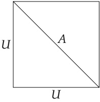
图1.2
根据勾股定理有 A 2 = 2 U 2 A^2 = 2U^2 A A U U U ′ U' A = n U ′ A = nU' U = m U ′ U = mU' ( n / m ) 2 = 2 (n/m)^2 = 2 n / m = 2 n/m = \sqrt{2}
在证明之前，先做点观察．尽管我们利用了勾股定理，但其实仅限于等腰直角三角形这种特殊图形．在这类图形中，定理是很明显成立的．
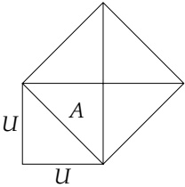
图1.3
考虑图 1.3 中的 5 个全等的等腰直角三角形，它们的面积记为 S．以线段 U 为边长的正方形包含两个这样的三角形，因此有 U 2 = 2 S U^{2}=2S A 2 = 4 S A^{2}=4S A 2 = 2 U 2 A^{2}=2U^{2} ( A / U ) 2 = 2 (A/U)^{2}=2
现在我们来证明定理 2. 因为我们想要证明 2 \sqrt{2} 2 = n / m \sqrt{2} = n/m 2 = n / m \sqrt{2} = n/m 2 = ( n / m ) 2 = n 2 / m 2 2 = (n/m)^2 = n^2/m^2 m 2 m^2
2 m 2 = n 2 , 2m^{2}=n^{2},
其中 n 和 m 是两个互素的自然数.
因为左侧有因子2，所以问题就与自然数能否被2整除有关了．能被2整除的自然数我们称之为偶数，不能被2整除的就称为奇数．根据定义，每个偶数k都能写成k=2l的形式，这里l是个自然数．这就是说，对于偶数我们都有一个想当明显的表示，而奇数就比较“负面”了——它们不可能有上述表示．当然，我们能很容易地得到奇数的一种明显的表示．
每个奇数 r 都能写成 r = 2 s + 1 r = 2s + 1
反过来的部分是很显然的：假若 r = 2 s + 1 r = 2s + 1
2 l = 2 s + 1 , 2 ( l − s ) = 1 . 2l=2s+1,\qquad2(l-s)=1.
这明显是不成立的。
为了证明原始命题，我们要注意到，如果奇数 r ≤ 2 r \leq 2 r ≥ 3 r \geq 3 r 1 = r − 2 ≥ 1 r_1 = r - 2 \geq 1 r 1 r_1 r 2 = r 1 − 2 r_2 = r_1 - 2 r , r 1 , r 2 , ⋯ r, r_1, r_2, \cdots r i > 1 r_i > 1 r i = 1 r_i = 1
r i = r i − 1 − 2 = r i − 2 − 2 − 2 = ⋯ = r − 2 − 2 − ⋯ − 2 = r − 2 i = 1 . r_{i}=r_{i-1}-2=r_{i-2}-2-2=\cdots=r-2-2-\cdots-2=r-2i=1.
这就是我们想要的 r = 2i + 1. ■
现在我们介绍一个关于奇偶数的基本性质.
两个偶数之积是偶数，一个偶数与一个奇数之积是偶数，两个奇数之积是奇数.
前面两个论断从偶数的定义来看是很明显的：若 k = 2l，那么无论 m 是偶数还是奇数，km = 2lm 总是偶数．但为了证明最后一个论断，我们需要引理 1．令 k 1 k_{1} k 2 k_{2}
k 1 = 2 s 1 + 1 , k 2 = 2 s 2 + 1 , k_{1}=2s_{1}+1,\qquad k_{2}=2s_{2}+1,
其中 s 1 s_{1} s 2 s_{2}
k 1 k 2 = ( 2 s 1 + 1 ) ( 2 s 2 + 1 ) = 4 s 1 s 2 + 2 s 1 + 2 s 2 + 1 = 2 s + 1 , k_{1}k_{2}=(2s_{1}+1)(2s_{2}+1)=4s_{1}s_{2}+2s_{1}+2s_{2}+1=2s+1,
其中 s = 2 s 1 s 2 + s 1 + s 2 s = 2s_1s_2 + s_1 + s_2 2 s + 1 2s + 1 k 1 k 2 k_1k_2
这里提一下引理 2 的一个特殊情形：奇数的平方是奇数.
现在完成定理 2 的证明就很容易了。我们假定 (1.1) 等式成立，其中 m, n 互素。假如 n 是奇数，那么根据引理 2， n 2 n^{2}
m 2 = 2 s 2 , m^{2}=2s^{2},
它说明一个奇数的平方却是个偶数，这与引理2矛盾了．至此，我们证明了定理2，同时也证明了定理1．■
在认定了任意一条线段的长度（单位长度给定）和任意正数的平方根都一定能用某个数来表达的情况下，我们可以从一个不同的视角来审视定理1和定理2．这两个定理说的是单位正方形对角线的长度，或者说 2 \sqrt{2} π \pi 2 \sqrt{2} π \pi
所有的有理数和无理数组成了实数．在后面我们会用一章来更精确的陈述实数概念的逻辑意义．在那之前，我们就像通常的中学课本那样对待实数，不特别关心它的逻辑基础．
为什么人类花了这么长的时间才意识到存在无理数这么简单——同时也非常重要——的事呢？答案很简单，因为无论对于什么现实应用，诸如 2 \sqrt{2}
无论数 ϵ \epsilon a = m / n a = m/n a < 2 a < \sqrt{2} 2 − a < ϵ \sqrt{2} - a < \epsilon
在所有实际测量中都有一个精度的问题，在那个精度内我们可以把 2 \sqrt{2} 2 \sqrt{2}
为了证明定理 3，我们用 n n 1 / 10 n 1/10^n ϵ \epsilon k k
k 10 n ≤ 2 < k + 1 10 n . \frac{k}{10^{n}}\leq\sqrt{2}<\frac{k+1}{10^{n}}.
然后令 a = k / 10 n a = k/10^n 2 − k / 10 n < 1 / 10 n \sqrt{2} - k/10^n < 1/10^n
不等式（1.2）等价于下面的不等式
k 2 10 2 n ≤ 2 < ( k + 1 ) 2 10 2 n \frac{k^{2}}{10^{2n}}\leq2<\frac{(k+1)^{2}}{10^{2n}}
或者
k 2 ≤ 2 ⋅ 10 2 n < ( k + 1 ) 2 . k^{2}\leq2\cdot10^{2n}<(k+1)^{2}.
因为数 n n 2 ⋅ 10 2 n 2 \cdot 10^{2n} 2 ⋅ 10 2 n 2 \cdot 10^{2n} k k k k a a
很显然，定理 3 的结论不仅对 2 \sqrt{2} x x x x U U U / 10 n U/10^n
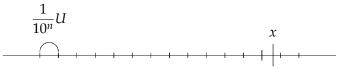
图1.4
连续放置后，不超过 x 的最右侧的端点给出了我们所需要的有理数．如果这是第 k 条线段，那么就有
a = k 10 n 且 x − a < 1 10 n . a=\frac{k}{10^{n}}\quad \text{且} \quad x-a<\frac{1}{10^{n}}.
至此我们证明了定理 3. ■
现在请来估量一下定理1和定理2中论断的深度．无论是什么实验都不能确定论断的正确性，因为实验总是有精确度的问题．无论要求了怎样的精度， 2 \sqrt{2}
定理 1 和 2 的证明阐明了“定理为何需要证明”这一常被提及的问题．脑中反应出的第一个答案是我们需要确证某些论断的正确性．有时候会出现这种情况，论断的太多特殊情形已经被证明，以至于叫人觉得整个论断的正确性不会有什么问题的（这引发了物理学家经常嘲笑数学家总是去证明那些无甚疑义的论断的正确性）．但我们经常见到一些证明为数学家带来了全新的思想，当初如果不考虑证明，那这些想法很可能永远不为人知．
证明 6 \sqrt{6} 2 3 \sqrt[3]{2}
证明 2 + 3 \sqrt{2} + \sqrt{3}
证明 3 3 + 2 \sqrt[3]{3} + \sqrt{2}
计算 2 \sqrt{2}
证明每个自然数都能写成2的若干个不同次幂（即 2 k 2^{k}
3 自然数的素分解
通过前面的章节，我们知道每个大于1的自然数都有素因数。由此我们可以得到其他一些结论。
如果数 p p p p p = p p = p n > 1 n > 1 n = p 1 n 1 n = p_1 n_1 p 1 > 1 p_1 > 1 n 1 < n n_1 < n n 1 n_1 n n n = p 1 ⋯ p k n k n = p_1 \cdots p_k n_k p i p_i n i n_i n > n 1 > n 2 > ⋯ n > n_1 > n_2 > \cdots r r n r = 1 n_r = 1 n = p 1 ⋯ p r n = p_1 \cdots p_r
当然，读者很容易利用数学归纳原理给出一个更“严格”的证明.
上述证明过程有一点是需要特别在意的：如果 n 有很多素因数，那么第一步我们可能选择其中任意一个．比如，30 可以先表示成 2 × 15 2 \times 15 2 × 3 × 5 2 \times 3 \times 5 3 × 10 3 \times 10 3 × 2 × 5 3 \times 2 \times 5 23623 × 31327 23623 \times 31327
60 = 2 × 30 = 6 × 10 . 60=2\times30=6\times10.
更有甚者，有的数会有多种分解：
420 = 2 × 210 = 6 × 70 = 10 × 42 = 14 × 30 . 420=2\times210=6\times70=10\times42=14\times30.
因此，如果自然数的素分解是唯一的，那么其证明必定涉及到“我们处理的是全体自然数”这一事实，而非（比方说）仅仅是偶数。
任一自然数的任意两种素分解除分解顺序不同外再无其他区别.
它的证明不能说是完全显然，但其中所有的难点我们在证明定理6时已全部解决了.
首先我们对定理 6 作个简单的推广：
如果任意多个自然数的乘积能被素数 p 整除，那么其中至少有一个数能被 p 整除。
设有
n 1 n 2 ⋅ ⋅ ⋅ n r = p a . n_{1}n_{2}\cdot\cdot\cdot n_{r}=pa.
我们对 r 进行归纳来证明这个结论．若 r = 2，其即为定理 6．对于 r > 2，我们将等式写成下面的形式
n 1 ( n 2 ⋯ n r ) = p a . n_{1}(n_{2}\cdots n_{r})=p a.
依据定理 6， p p n 1 n_1 n 2 ⋯ n r n_2 \cdots n_r n n
n = p 1 ⋯ p r = q 1 ⋯ q s . n=p_{1}\cdots p_{r}=q_{1}\cdots q_{s}.
由此可知 p 1 p_1 q 1 ⋯ q s q_1 \cdots q_s p 1 p_1 q 1 , ⋯ , q s q_1, \cdots, q_s q i q_i q i q_i p 1 p_1 q i q_i p 1 = q 1 p_1 = q_1 p 1 p_1
n ′ = n p 1 = p 2 ⋯ p r = q 2 ⋯ q s . n^{\prime}=\frac{n}{p_{1}}=p_{2}\cdots p_{r}=q_{2}\cdots q_{s}.
现在的命题是关于一个更小的数 n ′ n' r − 1 = s − 1 r - 1 = s - 1 r = s r = s p 2 = q 2 p_2 = q_2 p 3 = q 3 p_3 = q_3 ⋯ \cdots p r = q r p_r = q_r p 1 = q 1 p_1 = q_1
《几何原本》中记载了上述定理．它尽管很简单，却一直被看作是一个抽象的定理．然而在过去几十年里，它却有了出人意料的实际应用．这涉及到密码问题，即将信息进行一些处 理，使得它不能被那些没有额外信息（秘钥）的人理解。实践表明要对一个非常大的数进行素分解，这需要海量的运算。这个关于素数相乘的逆问题在复杂性方面是无与伦比的。举个例子，将两个长达数十位的素数相乘，只要坚持运算，算出结果是没什么问题的。一个30位数乘以一个40位数，手算一天就能搞定。但要把这个结果（大约是个70位数）进行素分解，即使借助现代的计算机，从地球产生起一直算到现在，也得不到结果。假如一个人知道两个大素数p、q，另一个人知道两者之积n=pq，从定理8的角度来看，这两者掌握的信息其实是一样的，只是形式不同罢了。但从p、q到n很容易，反过来要从n得到p、q这在现实中是不可能的。这就是“密码”中最基本的思想。对于具体的细节，我们此处略过。
在将一个数进行素分解时，某些素因数可能会多次出现，比如 90 = 2 × 3 × 3 × 5 90 = 2 \times 3 \times 3 \times 5 90 = 2 × 3 2 × 5 90 = 2 \times 3^{2} \times 5
n = p 1 α 1 p 2 α 2 ⋅ ⋅ ⋅ p r α r , n=p_{1}^{\alpha_{1}}p_{2}^{\alpha_{2}}\cdot\cdot\cdot p_{r}^{\alpha_{r}},
其中 p 1 , ⋯ , p r p_1, \cdots, p_r α i ≥ 1 \alpha_i \geq 1 n n
一旦知道了 n 的标准分解，我们就能了解 n 的因数方面的一切信息．对于形如（1.10）的标准分解，我们考虑下面形式的数
m = p 1 β 1 p 2 β 2 ⋅ ⋅ ⋅ p r β r . m=p_{1}^{\beta_{1}}p_{2}^{\beta_{2}}\cdot\cdot\cdot p_{r}^{\beta_{r}}.
这里 p i p_i β 1 ≤ α 1 \beta_1 \leq \alpha_1 β 2 ≤ α 2 \beta_2 \leq \alpha_2 ⋯ \cdots β r ≤ α r \beta_r \leq \alpha_r m m n n β i \beta_i p i p_i n n m m n n m m n n p i p_i m m n = m k n = mk k k n n
k = p 1 γ 1 p 2 γ 2 ⋅ ⋅ ⋅ p r γ r . k=p_{1}^{\gamma_{1}}p_{2}^{\gamma_{2}}\cdot\cdot\cdot p_{r}^{\gamma_{r}}.
将 m m k k n n β 1 + γ 1 = α 1 \beta_1 + \gamma_1 = \alpha_1 β 1 ≤ α 1 \beta_1 \leq \alpha_1 β 2 ≤ α 2 \beta_2 \leq \alpha_2 ⋯ \cdots β r ≤ α r \beta_r \leq \alpha_r
现在我们计算数 n n n n n = 30 n=30 n n n = p α n = p^{\alpha} p β p^{\beta} 0 ≤ β ≤ α 0 \leq \beta \leq \alpha 1 + p + p 2 + ⋯ + p α 1 + p + p^{2} + \cdots + p^{\alpha}
s = 1 + a + a 2 + ⋯ + a r s=1+a+a^{2}+\cdots+a^{r}
这种式子我们有通用公式（你或许已经知道这个了）可用．公式推导其实很简单：上式两边同时乘以 a，可得
s a = a + a 2 + a 3 + ⋯ + a r + 1 . sa=a+a^{2}+a^{3}+\cdots+a^{r+1}.
可以看到，上面两个表达式几乎是一样的，s 中有 1 而 sa 中没有，但 sa 中的 a r + 1 a^{r+1}
s a − s = a r + 1 − 1 , s a-s=a^{r+1}-1,
即 s ( a − 1 ) = a r + 1 − 1 s(a-1)=a^{r+1}-1
s = 1 + a + a 2 + ⋯ + a r = a r + 1 − 1 a − 1 . s=1+a+a^{2}+\cdots+a^{r}=\frac{a^{r+1}-1}{a-1}.
因为我们需要除以 a − 1 a-1 a ≠ 1 a \ne 1 1 , a , ⋯ , a r 1, a, \cdots, a^r
回到我们的问题，此时 n = p α n = p^{\alpha}
1 + p + p 2 + ⋯ + p α = p α + 1 − 1 p − 1 . 1+p+p^{2}+\cdots+p^{\alpha}=\frac{p^{\alpha+1}-1}{p-1}.
现在我们考虑稍微复杂一点的情形：数 n 有两个素因数．将其写作标准分解形式，即为 n = p 1 α 1 p 2 α 2 n = p_{1}^{\alpha_{1}}p_{2}^{\alpha_{2}} p 1 β 1 p 2 β 2 p_{1}^{\beta_{1}}p_{2}^{\beta_{2}} 0 ≤ β 1 ≤ α 1 , 0 ≤ β 2 ≤ α 2 0 \leq \beta_{1} \leq \alpha_{1}, 0 \leq \beta_{2} \leq \alpha_{2} β 2 \beta_{2} β 2 = 0 \beta_{2} = 0 p 1 , p 1 2 , ⋯ , p 1 α 1 p_{1}, p_{1}^{2}, \cdots, p_{1}^{\alpha_{1}}
p 1 α 1 + 1 − 1 p 1 − 1 . \frac{p_{1}^{\alpha_{1}+1}-1}{p_{1}-1}.
与 β 2 = 1 \beta_2 = 1 p 2 p_2 p 1 p 2 p_1 p_2 p 1 2 p 2 p_1^2 p_2 ⋯ \cdots p 1 α 1 p 2 p_1^{\alpha_1} p_2 p 2 p_2
( 1 + p 1 + p 1 2 + ⋯ + p 1 α 1 ) p 2 = p 1 α 1 + 1 − 1 p 1 − 1 p 2 . (1+p_{1}+p_{1}^{2}+\cdots+p_{1}^{\alpha_{1}})p_{2}=\frac{p_{1}^{\alpha_{1}+1}-1}{p_{1}-1}p_{2}.
以此类推，对于每个固定的 β 2 \beta_{2}
( 1 + p 1 + p 1 2 + ⋯ + p 1 α 1 ) p 2 β 2 = p 1 α 1 + 1 − 1 p 1 − 1 p 2 β 2 . (1+p_{1}+p_{1}^{2}+\cdots+p_{1}^{\alpha_{1}})p_{2}^{\beta_{2}}=\frac{p_{1}^{\alpha_{1}+1}-1}{p_{1}-1}p_{2}^{\beta_{2}}.
将所有这些和式再相加，就得到我们所要求的所有因数之和
p 1 α 1 + 1 − 1 p 1 − 1 + p 1 α 1 + 1 − 1 p 1 − 1 p 2 + ⋯ + p 1 α 1 + 1 − 1 p 1 − 1 p 2 α 2 = p 1 α 1 + 1 − 1 p 1 − 1 ( 1 + p 2 + ⋯ + p 2 α 2 ) . \frac{p_{1}^{\alpha_{1}+1}-1}{p_{1}-1}+\frac{p_{1}^{\alpha_{1}+1}-1}{p_{1}-1}p_{2}+\cdots+\frac{p_{1}^{\alpha_{1}+1}-1}{p_{1}-1}p_{2}^{\alpha_{2}}=\frac{p_{1}^{\alpha_{1}+1}-1}{p_{1}-1}(1+p_{2}+\cdots+p_{2}^{\alpha_{2}}).
应用等比数列求和公式来计算括号中的和式，于是就得到了我们所要求的结果：对于数 n = p 1 α 1 p 2 α 2 n = p_1^{\alpha_1} p_2^{\alpha_2}
p 1 α 1 + 1 − 1 p 1 − 1 p 2 α 2 + 1 − 1 p 2 − 1 . \frac{p_{1}^{\alpha_{1}+1}-1}{p_{1}-1}\frac{p_{2}^{\alpha_{2}+1}-1}{p_{2}-1}.
现在你一定猜到最一般情形下的结果是什么样了．我们考虑如下乘积
S ′ = ( 1 + p 1 + p 1 2 + ⋯ p 1 α 1 ) ( 1 + p 2 + p 2 2 + ⋯ p 2 α 2 ) ⋯ ( 1 + p r + p r 2 + ⋯ p r α r ) , S^{\prime}=(1+p_{1}+p_{1}^{2}+\cdots p_{1}^{\alpha_{1}})(1+p_{2}+p_{2}^{2}+\cdots p_{2}^{\alpha_{2}})\cdots(1+p_{r}+p_{r}^{2}+\cdots p_{r}^{\alpha_{r}}),
然后将所有的括号中的元素都乘开.
对于下述乘积
( a + b + ⋯ ) k , (a+b+\cdots)k,
我们将括号中每个元素都与 k 相乘，然后将它们相加．如果乘积中有两对括号，形如
( a 1 + b 1 + ⋯ ) ( a 2 + b 2 + ⋯ ) , (a_{1}+b_{1}+\cdots)(a_{2}+b_{2}+\cdots),
我们将前一个括号中的每个元素与后一个括号中的每个元素都相乘，然后将得到的数（诸如 a 1 a 2 a_1a_2 a 1 b 2 a_1b_2 a 1 c 2 a_1c_2 b 1 a 2 b_1a_2 b 1 b 2 b_1b_2
( a 1 + b 1 + ⋯ ) ( a 2 + b 2 + ⋯ ) ⋯ ( a r + b r + ⋯ ) , (a_{1}+b_{1}+\cdots)(a_{2}+b_{2}+\cdots)\cdots(a_{r}+b_{r}+\cdots),
我们分别从每个括号中取一个元素，将它们相乘，最后再把所有可能得到的结果整个加起来。现在把上述规则用来求 S ′ S' ( p 1 β 1 , p 2 β 2 , ⋯ , p r β r (p_1^{\beta_1}, p_2^{\beta_2}, \cdots, p_r^{\beta_r} 0 ≤ β i ≤ α i 0 \leq \beta_i \leq \alpha_i
p 1 β 1 p 2 β 2 ⋅ ⋅ ⋅ p r β r , p_{1}^{\beta_{1}}p_{2}^{\beta_{2}}\cdot\cdot\cdot p_{r}^{\beta_{r}},
依照(1.11)式,这正好是n的一个因数.同时按照定理9,每一项都只出现一次.因此, S ′ S' ( p i α i + 1 − 1 ) / ( p i − 1 ) (p_{i}^{\alpha_{i}+1}-1)/(p_{i}-1)
S ′ = p 1 α 1 + 1 − 1 p 1 − 1 p 2 α 2 + 1 − 1 p 2 − 1 ⋯ p r α r + 1 − 1 p r − 1 . S^{\prime}=\frac{p_{1}^{\alpha_{1}+1}-1}{p_{1}-1}\frac{p_{2}^{\alpha_{2}+1}-1}{p_{2}-1}\cdots\frac{p_{r}^{\alpha_{r}+1}-1}{p_{r}-1}.
这就是我们所要求的所有因数之和的公式．与此同时，我们也得到了所有因数的个数．为了求得因数的个数，我们将参与求和的每一项变为1即可．回顾上述证明，我们可以看到，只需将 S ′ S' α 1 + 1 \alpha_{1}+1 α 2 + 1 \alpha_{2}+1 α r + 1 \alpha_{r}+1
( α 1 + 1 ) ( α 2 + 1 ) ⋯ ( α r + 1 ) . (\alpha_{1}+1)(\alpha_{2}+1)\cdots(\alpha_{r}+1).
举个例子，数 p α q β p^{\alpha}q^{\beta} ( α + 1 ) ( β + 1 ) (\alpha+1)(\beta+1)
利用同样的方法，我们可以求出所有因数的平方（或立方，乃至任意 k 次方）之和．整个论证与之前相比不必做大的改动，你应该相信，利用这种方法我们可以得到标准分解形如 ( 1.10 ) (1.10)
S = p 1 k ( α 1 + 1 ) − 1 p 1 k − 1 p 2 k ( α 2 + 1 ) − 1 p 2 k − 1 ⋯ p r k ( α r + 1 ) − 1 p r k − 1 . S=\frac{p_{1}^{k(\alpha_{1}+1)}-1}{p_{1}^{k}-1}\frac{p_{2}^{k(\alpha_{2}+1)}-1}{p_{2}^{k}-1}\cdots\frac{p_{r}^{k(\alpha_{r}+1)}-1}{p_{r}^{k}-1}.
我们还可以探究两个自然数 m 和 n 的公因数．假设他们有如下的标准分解
n = p 1 α 1 ⋯ p r α r , m = p 1 β 1 ⋯ p r β r , n=p_{1}^{\alpha_{1}}\cdots p_{r}^{\alpha_{r}},\qquad m=p_{1}^{\beta_{1}}\cdots p_{r}^{\beta_{r}},
为了包含某素数只整除了 m 和 n 其中一个的情况，我们允许 ( α i , β i ) \left(\alpha_{i},\beta_{i}\right)
k = p 1 γ 1 ⋅ ⋅ ⋅ p r γ r , k=p_{1}^{\gamma_{1}}\cdot\cdot\cdot p_{r}^{\gamma_{r}},
对于每个 i i γ i ≤ α i \gamma_i \leq \alpha_i γ i ≤ β i \gamma_i \leq \beta_i σ i \sigma_i α i \alpha_i β i \beta_i γ i ≤ σ i \gamma_i \leq \sigma_i i i
d = p 1 σ 1 ⋯ p r σ r , d=p_{1}^{\sigma_{1}}\cdots p_{r}^{\sigma_{r}},
则前面的论述表明下面这一定理是成立的.
对于任意两个标准分解形如 (1.14) 式的自然数 m 和 n，它们能同时被由 (1.15) 式所定义的 d 整除．另外，m 和 n 的所有公因数都是 d 的因数．
数 d 称为 m 和 n 的最大公因数，记为 gcd ( m , n ) \gcd(m,n)
前面我们谈到过，将一个数进行素分解可是个苦力活．因此我们寻求另外一种途径来求最大公因数，这一途径不需要素分解．学校中通常讲的就是这种方法，它的依据是定理5．设 m m n n n = m t + r n = mt + r 0 ≤ r < m 0 \leq r < m
若 r ≠ 0 r \neq 0 gcd ( n , m ) = gcd ( m , r ) \gcd(n, m) = \gcd(m, r)
其实我们很容易就能说明更强的结论也是对的：m 和 n 以及 m 和 r 这两组数有相同的公因数，因此它们的最大公因数也相同。设 d 是 m 和 n 的一个公因数，由 r = n - mt 可知 d 也是 m 和 r 的公因数。若 d ′ d'
从数对 ( n , m ) (n,m) ( m , r ) (m,r) r < m r<m ( m , r ) (m,r) m = r t 1 + r 1 m=rt_1+r_1 0 ≤ r 1 < r 0\leq r_1<r r 1 ≠ 0 r_1\neq0 gcd ( m , r ) = gcd ( r , r 1 ) \gcd(m,r)=\gcd(r,r_1) r i = r i + 1 t i + 2 + 0 r_i=r_{i+1}t_{i+2}+0 r i + 2 = 0 r_{i+2}=0 r i + 1 r_{i+1} r i r_i gcd ( r i , r i + 1 ) = r i + 1 \gcd(r_i,r_{i+1})=r_{i+1} r i + 1 = gcd ( n , m ) r_{i+1}=\gcd(n,m) 2 。《几何原本》中有写：我们以计算 gcd ( 8891 , 2329 ) \gcd(8891,2329)
8891 = 2329 × 3 + 1904 ; 2329 = 1904 × 1 + 425 ; 1904 = 425 × 4 + 204 ; 425 = 204 × 2 + 17 ; 204 = 17 × 12 + 0 ; ⇒ gcd ( 8891 , 2329 ) = 17 . \begin{array}{l}8891=2329\times3+1904; \quad 2329=1904\times1+425; \quad 1904=425\times4+204;\\425=204\times2+17;\quad204=17\times12+0;\quad\Longrightarrow\operatorname*{g c d}(8891,2329)=17. \end{array}
如果 m 和 n 的公因数只有 1，则称它们互素。这意味着 gcd ( n , m ) = 1 \gcd(n, m) = 1
我们以最初的关于无理性的问题来结束本章．前面我们已经大大推广了“ 2 \sqrt{2}
我们将形如 a x k ax^k a a x x k k k k a a a x 2 y 8 ax^2y^8 a x k ax^k b x k bx^k ( a + b ) x k (a+b)x^k a k x k a_k x^k k = 0 k=0 a 0 a_0 2 x 3 − 3 x + 7 2x^3 - 3x + 7 a 0 = 7 a_0 = 7 a 1 = − 3 a_1 = -3 a 2 = 0 a_2 = 0 a 3 = 2 a_3 = 2 n n
f ( x ) = a 0 + a 1 x + a 2 x 2 + ⋯ + a n x n , f(x)=a_{0}+a_{1}x+a_{2}x^{2}+\cdots+a_{n}x^{n},
其中某些 a k a_{k} a n ≠ 0 a_{n} \neq 0 a 0 a_{0} a n a_{n} a 0 a_{0} a 0 a_{0} α \alpha f ( α ) = 0 f(\alpha) = 0 f ( x ) f(x) f ( x ) f(x) f ( x ) = 0 f(x) = 0 f ( x ) = 0 f(x) = 0 c f ( x ) = 0 cf(x) = 0
现在我们来研究各项系数 a i a_{i} f ( x ) = 0 f(x)=0 f ( x ) = 0 f(x)=0 c f ( x ) = 0 cf(x)=0
设 f ( x ) f(x) f ( x ) = 0 f(x) = 0 α \alpha α \alpha α \alpha f ( x ) f(x)
先将 α \alpha ± a / b \pm a/b f ( x ) f(x) a 0 + a 1 x + ⋯ + a n x n a_{0}+a_{1}x+\cdots+a_{n}x^{n} a i a_{i} α \alpha f ( x ) = 0 f(x)=0
a 0 + a 1 ( ± a b ) + ⋯ + a n − 1 ( ± a b ) n − 1 + ( ± a b ) n = 0 . a_{0}+a_{1}\Big(\pm\frac{a}{b}\Big)+\cdots+a_{n-1}\Big(\pm\frac{a}{b}\Big)^{n-1}+\Big(\pm\frac{a}{b}\Big)^{n}=0.
方程两边同时乘以 b n b^{n} ( ± a ) n (\pm a)^{n}
[ a 0 b n − 1 + a 1 ( ± a ) b n − 2 + ⋅ ⋅ ⋅ + a n − 1 ( ± a ) n − 1 ] b = ( ± 1 ) n − 1 a n . [a_{0}b^{n-1}+a_{1}(\pm a)b^{n-2}+\cdot\cdot\cdot+a_{n-1}(\pm a)^{n-1}]b=(\pm1)^{n-1}a^{n}.
因此 b 整除 a n a^n α \alpha b > 1 b > 1 a n a^n b = 1 b = 1 α = ± a \alpha = \pm a a 0 a_{0}
a 0 = a ( − ( ± a 1 ) − a 2 ( ± a ) − ⋯ − a n − 1 ( ± a ) n − 2 − ( ± a ) n − 1 ) . a_{0}=a\Big(-\left(\pm a_{1}\right)-a_{2}(\pm a)-\cdots-a_{n-1}(\pm a)^{n-2}-\left(\pm a\right)^{n-1}\Big).
显然有 a（因此 α \alpha a 0 a_{0}
上述证明是由中世纪的数学家比萨的莱昂纳多（通常被称为斐波那契）给出的．在一本大约写于 1225 年的著作中，他对方程 x 3 + 2 x 2 + 10 x = 20 x^{3}+2x^{2}+10x=20
对于这类首项系数为 1 的整系数方程，定理 11 给出了寻找其有理数根的可能性：找出常数项的所有因数（可正可负），然后验证它们是不是根．以 x 5 − 13 x + 6 = 0 x^{5}-13x+6=0 ± 1 , ± 2 , ± 3 \pm1,\pm2,\pm3 ± 6 \pm6
因此，对于首项系数为 1 的整系数方程，除了那些可以整除常数项的整数根外，其余所有的根都是无理数．本章开头的一些结论就是这一结论的特殊情形：令 f ( x ) = x 2 − 2 f(x)=x^{2}-2 f ( x ) = x 2 − 3 f(x)=x^{2}-3 f ( x ) = x 2 − c f(x)=x^{2}-c
我们不妨考虑下述方程
x 3 − 7 x 2 + 14 x − 7 = 0 . x^{3}-7x^{2}+14x-7=0.
依照定理 11，它的有理数根只可能是那些整除 -7 的整数．逐一验证表明它们都不是方程的根，因此这个方程的根都是无理数．确实，方程到底有没有根目前我们不知道，但后面的知识会告诉我们，方程确实有根，而且它们还非常有趣．
在半径为 1 的圆中画一个内接正七边形，其边长的平方就是方程 (1.17) 的一个根．其实，方程有三个根，一个在 0 和 1 之间，一个在 2 和 3 之间，还有一个在 3 和 4 之间．如果我们将多边形的任意两个顶点的连线都叫做对角线的话（此时边长也是对角线），那么这三个根就都是前述正七边形的某条对角线的平方．如图1.5，正七边形只有三种不同长度的对角线 AB，AC 和 AD．因此所有这三种长度都是无理数．
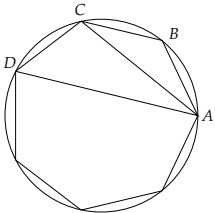
图1.5
如果将自然数和素数换成（本节开始提到过的）偶数与偶素数，那么定理6就不能成立了．请问定理6论证中的哪一步会出问题？
证明：假设自然数 m m n n m m n n m n mn m n mn m m n n S ( m n ) = S ( m ) S ( n ) S(mn) = S(m)S(n) S ( N ) S(N) N N k k
假若数 n 除自身外的所有因数之和等于 n，那么称其为完全数。比如 6 和 28 都是完全数。证明：若 p = 2 r − 1 p = 2^r - 1 2 r − 1 p 2^{r-1} p 2 r − 1 p 2^{r-1} p p = 2 r − 1 p = 2^r - 1
对于自然数 m 和 n，如果存在整数 a 和 b 使得 m a + n b = 1 ma + nb = 1 m a + n b = 1 ma + nb = 1
利用习题 4 中的结论给出定理 6 的一个新证明．正如我们看到的，从定理 6 很容易得到定理 9．这整个过程这就是欧几里得的证法．
试对素因数的个数做归纳来证明公式(1.13).
哪些整数 a 可以使得 x n + a x + 1 x^{n} + ax + 1
设 f ( x ) f(x) α = ± a / b \alpha = \pm a/b f ( x ) = 0 f(x) = 0 b b a a
7 集合与子集
集合这个词通常暗示数目众多，但数学中的集合可以包括任意多个对象（数目可以是 2，甚至更少），不过它们必须具有某种明确的性质．我们通常用大写字母（比如 S）来表示集合，其中的元素用小写字母表示（比如 a，b，α，β）．如果 a 是集合 S 中的元素，则称 a 属于 S，记作 a ∈ S a \in S a 1 a_1 a n a_n S = { a 1 ， ⋯ ， a n } S = \{a_1，\cdots，a_n\}
包含有限多个元素的集合称为有限集，包含无穷多个元素的集合称为无限集．有限集 S S n ( S ) n(S) S S S ′ S' n ( S ) = n ( S ′ ) n(S) = n(S') S S S ′ S' ( a , a ′ ) (a,a') a ∈ S a \in S a ′ ∈ S ′ a' \in S' a a a ′ a' a ′ a' a a S S S ′ S'
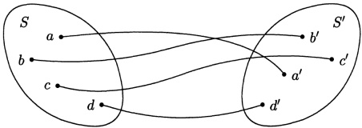
图3.1
假如 n ( S ) = n n(S) = n S = { a 1 , ⋯ , a n } S = \{a_1, \cdots, a_n\} ⋯ \cdots
在直线上选定点 O 作为原点，线段 OU 作为长度单位，然后我们就可以给直线上的点 A 赋以一个实数，这个实数的绝对值等于 | O A | / | O U | |OA| / |OU| ℝ \mathbb{R}
如果集合 S S S ′ S' a ∈ S a \in S a ′ ∈ S ′ a' \in S' a a a ′ a' a ′ a' a a
两个有限集是等势的，当且仅当它们之间存在一个一一对应.
这个陈述是如此显然，以至于很难将它称作定理．如果 n ( S ) = n ( S ′ ) = n n(S) = n(S') = n S = { a 1 , ⋯ , a n } S = \{a_1, \cdots, a_n\} S ′ = { a 1 ′ , ⋯ , a n ′ } S' = \{a'_1, \cdots, a'_n\} ( a i , a i ′ ) (a_i, a'_i) S = { a 1 , ⋯ , a n } S = \{a_1, \cdots, a_n\} a i a_i a ′ ∈ S ′ a' \in S' a i ′ a'_i i i S ′ S' S ′ = { a 1 ′ , ⋯ , a n ′ } S' = \{a'_1, \cdots, a'_n\}
理查德·戴德金（在19世纪下半叶）做了大量的工作来说明集合这一概念在数学中的作用，甚至将上述命题作为自然数的隐定义．按照他的观点，我们必须先定义一一对应这个概念，然后将自然数定义成所有相互之间可以建立一一对应的有限集的公有性质．自然数这个概念在历史上可能就是这么出现的（当然肯定没使用这里的术语）．比如，对两只眼睛、并行的两个人、船的两只桨以及所有可以与它们建立一一对应的对象进行抽象，就得到了“二”这个概念．
集合这一概念因此成了数学中最基本的概念，毕竟自然数的概念都是奠基于集合这一概念的.
对于任意两个集合 S 1 S_1 S 2 S_2 ( a , b ) (a,b) a ∈ S 1 a \in S_1 b ∈ S 2 b \in S_2 S 1 S_1 S 2 S_2 S 1 × S 2 S_1 \times S_2
比如 S 1 = { 1 , 2 } S_{1}=\{1,2\} S 2 = { 3 , 4 } S_{2}=\{3,4\} S 1 × S 2 S_{1}\times S_{2} ( 1 , 3 ) (1,3) ( 1 , 4 ) (1,4) ( 2 , 3 ) (2,3) ( 2 , 4 ) (2,4)
如果 S 1 S_1 S 2 S_2 ℝ \mathbb{R} S 1 × S 2 S_1 \times S_2 S 1 × S 2 S_1 \times S_2
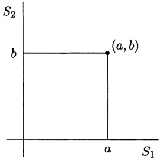
图3.2
再举一个例子．假设 S 1 = { 1 , ⋯ , n } S_1 = \{1, \cdots, n\} S 2 = { 1 , ⋯ , m } S_2 = \{1, \cdots, m\} x x y y x k x^k k ∈ S 1 k \in S_1 y l y^l l ∈ S 2 l \in S_2 S 1 × S 2 S_1 \times S_2 ( k , l ) (k, l) x k y l x^k y^l S 1 × S 2 S_1 \times S_2 x k y l x^k y^l k = 1 , ⋯ , n k = 1, \cdots, n l = 1 , ⋯ , m l = 1, \cdots, m
( x + x 2 + ⋯ + x n ) ( y + y 2 + ⋯ + y m ) = x y + x 2 y + x y 2 + ⋯ + x n y m . (x+x^{2}+\cdots+x^{n})(y+y^{2}+\cdots+y^{m})=xy+x^{2}y+xy^{2}+\cdots+x^{n}y^{m}.
因此，这些单项式构成的集合与 S 1 × S 2 S_1 \times S_2
同样的，设 S 1 S_1 S 2 S_2 ⋯ \cdots S r S_r ( a 1 , ⋯ , a r ) (a_1, \cdots, a_r) a i ∈ S i a_i \in S_i S 1 × ⋯ × S r S_1 \times \cdots \times S_r
如果 S 1 = S 2 = S 3 S_{1}=S_{2}=S_{3} S 1 × S 2 × S 3 S_{1}\times S_{2}\times S_{3}
再强调一下，本章我们感兴趣的还是有限集.
如果 S 1 , ⋯ , S r S_1, \cdots, S_r S 1 × ⋯ × S r S_1 \times \cdots \times S_r n ( S 1 × ⋯ × S r ) = n ( S 1 ) ⋅ ⋯ n ( S r ) . n(S_{1}\times\cdots\times S_{r})=n(S_{1})\cdot\cdots n(S_{r}).
首先我们证明 r = 2 的情形, 这是归纳法的基础. 设 S 1 = { a 1 , ⋯ , a n } S_1 = \{a_1, \cdots, a_n\} S 2 = { b 1 , ⋯ , b m } S_2 = \{b_1, \cdots, b_m\} ( a i , b j ) (a_i, b_j)
( a 1 , b 1 ) ⋯ ( a n , b 1 ) ( a 1 , b 2 ) ⋯ ( a n , b 2 ) ⋮ ⋱ ⋮ ( a 1 , b m ) ⋯ ( a n , b m ) . \begin{array}{ccc}(a_{1},b_{1})&\cdots&(a_{n},b_{1})\\ &&\\ (a_{1},b_{2})&\cdots&(a_{n},b_{2})\\ &&\\ \vdots&\ddots&\vdots\\ &&\\ (a_{1},b_{m})&\cdots&(a_{n},b_{m}).\end{array}
第 j j b j b_j n n a i a_i n n ( a i , b j ) (a_i, b_j) b j b_j m m n m nm S 1 S_1 { 1 , ⋯ , n } \{1, \cdots, n\} { x , x 2 , ⋯ , x n } \{x, x^2, \cdots, x^n\} S 2 S_2 { y , y 2 , ⋯ , y m } \{y, y^2, \cdots, y^m\} S 1 × S 2 S_1 \times S_2 n ( S 1 × S 2 ) n(S_1 \times S_2) x = y = 1 x = y = 1 n m nm
对 r 作归纳来证明结论的一般情形．将数组 ( a 1 , ⋯ , a r ) (a_{1},\cdots,a_{r}) ( ( a 1 , ⋯ , a r − 1 ) , a r ) ((a_{1},\cdots,a_{r-1}),a_{r}) x = ( a 1 , ⋯ , a r − 1 ) ∈ S 1 × ⋯ × S r − 1 x=(a_{1},\cdots,a_{r-1})\in S_{1}\times\cdots\times S_{r-1} ( ( a 1 , ⋯ , a r − 1 ) , a r ) ((a_{1},\cdots,a_{r-1}),a_{r}) ( x , a r ) (x,a_{r}) S 1 × ⋯ × S r S_{1}\times\cdots\times S_{r} P × S r P\times S_{r} P = S 1 × ⋯ × S r − 1 P=S_{1}\times\cdots\times S_{r-1} n ( P × S r ) = n ( p ) n ( S r ) n(P\times S_{r})=n(p)n(S_{r}) n ( P ) = n ( S 1 ) ⋯ n ( S r − 1 ) n(P)=n(S_{1})\cdots n(S_{r-1}) n ( S 1 × ⋯ × S r ) = n ( S 1 ) ⋯ n ( S r − 1 ) n ( S r ) n(S_{1}\times\cdots\times S_{r})=n(S_{1})\cdots n(S_{r-1})n(S_{r})
定理 20 给出了另一种求自然数 n 的因数个数的方法．设 n 有如下素分解
n = p 1 α 1 ⋯ p r α r . n=p_{1}^{\alpha_{1}}\cdots p_{r}^{\alpha_{r}}.
在第三节，我们知道 n 的任一因数都可以表示成如下形式
m = p 1 β 1 ⋅ ⋅ ⋅ p r β r , m=p_{1}^{\beta_{1}}\cdot\cdot\cdot p_{r}^{\beta_{r}},
其中 β i \beta_{i} α i \alpha_{i} ( β 1 , ⋯ , β r ) (\beta_{1},\cdots,\beta_{r}) S 1 × ⋯ × S r S_{1}\times\cdots\times S_{r} S i = { 0 , 1 , ⋯ , α i } S_{i}=\{0,1,\cdots,\alpha_{i}\} n ( S 1 ) = α i + 1 n(S_{1})=\alpha_{i}+1 ( α 1 + 1 ) ( α 2 + 1 ) ⋯ ( α r + 1 ) (\alpha_{1}+1)(\alpha_{2}+1)\cdots(\alpha_{r}+1)
如果 S 1 = S 2 = ⋯ = S r = S S_1 = S_2 = \cdots = S_r = S S 1 × ⋯ × S_1 \times \cdots \times S r S^r S 1 = ⋯ = S r = I S_1 = \cdots = S_r = I I I a a b b I r I^r r r a a b b a a b b b a aabbba a a b b ⋅ \cdot − - n ( I r ) n(I^r) r r n ( I ) = 2 n(I) = 2 2 r 2^r
本章中我们还会研究那些包含在 S 中的集合，它们被称为 S 的子集. S 的子集 N 中的元素都在 S 中，但未必包括 S 中所有元素. 我们用记号 N ⊂ S N \subset S ⌀ \varnothing n ( ⌀ ) = 0 n(\varnothing) = 0
如果 N ⊂ S N \subset S N ¯ \overline{N} N ¯ \overline{N} N ¯ = ∅ \overline{N} = \emptyset
若 N 1 N_1 N 2 N_2 N 1 N_1 N 2 N_2 N 1 ∩ N 2 N_1 \cap N_2 N 1 N_1 N 2 N_2 N 1 ∩ N 2 N_1 \cap N_2
如果 N 1 N_1 N 2 N_2 S S N 1 N_1 N 2 N_2 N 1 ∩ N 2 = ⌀ N_1 \cap N_2 = \varnothing
所有那些或者属于 N 1 N_1 N 2 N_2 N 1 ∪ N 2 N_1 \cup N_2 S S N 1 N_1 N 2 N_2 N 1 ∪ N 2 = S N_1 \cup N_2 = S
我们可以用图 3.3 中所示的图形来表示集合间的交与并。在图 3.3a 中，整个曲线包围的部分表示 M 1 ∪ M 2 M_1 \cup M_2 M 1 ∩ M 2 M_1 \cap M_2 ( M 1 ∪ M 2 ) ∩ M 3 (M_1 \cup M_2) \cap M_3
在本章中，我们考虑的是有限集 S 中那些满足一个或多个条件的子集，并且推导出关于子集数目的一些公式．数学中研究这类问题的分支叫做组合学，因此组合学是研究任意有限集的理论．在这一理论中，我们不需要诸如距离、角度、方程或方程的根等概念．组合学只需要子集的概念以及子集中元素的个数．让人惊奇的是，只使用这些最朴素的材料我们就能发
图3.3
现许多不平凡的规律，以及它们与其他数学分支之间出人意料的联系。
习题
令 S = S ′ S = S' a ∈ S a \in S b ∈ S ′ b \in S' S ′ S'
设 N N M = N × N M = N \times N M ′ M' ( n 1 , n 2 ) ∈ M (n_1, n_2) \in M a ∈ M ′ a \in M' a = n 1 / n 2 a = n_1 / n_2 M M M ′ M'
如果 n ( S ) = n ( S ′ ) = 3 n(S) = n(S') = 3 S ′ S'
1 那样的示意图.
对于 S S S ′ S' ( a , a ′ ) (a,a') a ∈ S a \in S a ′ ∈ S ′ a' \in S' S × S ′ S \times S' A ̃ \widetilde{A} A 1 ̃ \widetilde{A_1} A 2 ̃ \widetilde{A_2} A 1 ̃ ∩ A 2 ̃ \widetilde{A_1} \cap \widetilde{A_2} A 1 ̃ = A 2 ̃ \widetilde{A_1} = \widetilde{A_2}
设 n ( S ) = n ( S ′ ) = n n(S) = n(S') = n Γ \Gamma S ′ S' n ( Γ ) n(\Gamma)
设 S S N 1 ⊂ S N_1 \subset S a 1 a_1 N 2 ⊂ S N_2 \subset S a 2 a_2 N 1 ∪ N 2 N_1 \cup N_2 N 1 ∩ N 2 N_1 \cap N_2
证明 ( N ¯ ) = N (\overline{N})=N
8 组合
我们来考虑最简单的问题：一个有限集共有多少个子集？
先对 n ( S ) n(S) n ( S ) n(S) n ( N ) n(N)
由此可知，当 n ( S ) = 1 n(S)=1 n ( S ) = 2 n(S)=2 n ( S ) = 3 n(S)=3
有限集 S 的子集总数为 2 n ( S ) 2^{n}(S)
研究任意有限集的常用方法是将研究对象从原集合转移到元素数目比较小的集合上去。对于 S S S 1 S_1 S 2 S_2 S 1 ∪ S 2 = S S_1 \cup S_2 = S S 1 ∩ S 2 = ⌀ S_1 \cap S_2 = \varnothing S S S 1 S_1 S 2 S_2 S 2 = S 1 ¯ S_2 = \overline{S_1} S 1 = S 2 ¯ S_1 = \overline{S_2} S S S 1 ∪ S 2 = S S_1 \cup S_2 = S S 1 S_1 S 2 S_2 S 1 ∩ S 2 = ⌀ S_1 \cap S_2 = \varnothing S S S 1 S_1 S 2 S_2 S = S 1 + S 2 S = S_1 + S_2 S S
设 S = S 1 + S 2 S = S_1 + S_2 N N S S N N a a S 1 S_1 N ∩ N 1 N \cap N_1 S 2 S_2 N ∩ S 2 N \cap S_2 N = ( N ∩ S 1 ) + ( N ∩ S 2 ) N = (N \cap S_1) + (N \cap S_2) N 1 ⊂ S 1 N_1 \subset S_1 N 2 ⊂ S 2 N_2 \subset S_2 N 1 ⊂ S N_1 \subset S N 2 ⊂ S N_2 \subset S N = N 1 ∪ N 2 ⊂ S N = N_1 \cup N_2 \subset S N ∩ S 1 = N 1 N \cap S_1 = N_1 N ∩ S 2 = N 2 N \cap S_2 = N_2 S S N N ( N 1 , N 2 ) (N_1, N_2) N 1 ⊂ S 1 N_1 \subset S_1 N 2 ⊂ S 2 N_2 \subset S_2
我们用集合的语言将这个结果重新表述一下．令 U ( S ) U(S) n ( S ) n(S) U ( S ) U(S) S = S 1 + S 2 S = S_1 + S_2 U ( S ) U(S) U ( S 1 ) × U ( S 2 ) U(S_1) \times U(S_2) v ( S ) = n ( U ( S ) ) v(S) = n(U(S))
v ( S 1 + S 2 ) = v ( S 1 ) v ( S 2 ) . v(S_{1}+S_{2})=v(S_{1})v(S_{2}).
等式 (3.3) 可以将 v ( S ) v(S) v ( S 1 ) v(S_1) v ( S 2 ) v(S_2) S 1 S_1 S 2 S_2 S 1 + ⋯ + S r − 1 S_1 + \cdots + S_{r-1} S = ( S 1 + ⋯ + S r − 1 ) + S r S = (S_1 + \cdots + S_{r-1}) + S_r S = S 1 + ⋯ + S r S = S_1 + \cdots + S_r S 1 , ⋯ , S r S_1, \cdots, S_r S 1 , ⋯ , S r S_1, \cdots, S_r S = S 1 + ⋯ + S r S = S_1 + \cdots + S_r S 1 S_1 S 2 S_2 3 r + 1 3r + 1 S 2 S_2 3 r + 2 3r + 2 S = S 1 + S 2 + S 3 S = S_1 + S_2 + S_3
通过归纳法，我们可以由 ( 3.3 ) (3.3)
v ( S 1 + ⋅ ⋅ ⋅ + S r ) = v ( S 1 ) ⋅ ⋅ ⋅ v ( S r ) , v(S_{1}+\cdot\cdot\cdot+S_{r})=v(S_{1})\cdot\cdot\cdot v(S_{r}),
其中 S i S_{i}
若 n ( S ) = n n(S) = n S S n n S i S_i S i S_i S = S 1 + ⋯ + S n S = S_1 + \cdots + S_n S = { a 1 , ⋯ , a n } S = \{a_1, \cdots, a_n\} S i = { a i } S_i = \{a_i\} S i S_i ⌀ \varnothing S i S_i v ( S i ) = 2 v(S_i) = 2 S = S 1 + ⋯ + S n S = S_1 + \cdots + S_n v ( S ) = 2 n v(S) = 2^n
这个关于给定集合的所有子集数目的问题碰巧与自然数方面的一些问题有联系．比如我们可以借此计算出一个给定的自然数可以用多少种方式写成两个互素因数的乘积．设 n = a b n = ab a a b b n n n = p 1 α 1 ⋯ p r α r n = p_1^{\alpha_1} \cdots p_r^{\alpha_r} a a b b n n p 1 β 1 ⋯ p r β r p_1^{\beta_1} \cdots p_r^{\beta_r} 0 ≤ β i ≤ α i 0 \leq \beta_i \leq \alpha_i a a b b p i p_i a a b b p i p_i a a p i α i p_i^{\alpha_i} a a n = a b n = ab S = { p 1 , ⋯ , p r } S = \{p_1, \cdots, p^r\} N N a a p i α i p_i^{\alpha_i} p i ∈ N p_i \in N a a n n b b n n 2 r 2^r r r n n
这里有一点需要说明，我们将 n = a b n = ab n = b a n = ba a a n = a b n = ab N ⊂ { p 1 , ⋯ , p r } N \subset \{p_1, \cdots, p_r\} b b N N p i ∈ S p_i \in S N N N ¯ \overline{N} N N N ¯ \overline{N} n = a b n = ab n = b a n = ba n = a b n = ab n = b a n = ba N N N ¯ \overline{N} 2 r − 1 2^{r-1}
现在来考虑更精细的问题：有限集 S 有多少个只包含 m 个元素的子集？为了讨论方便，我们让所有满足 n ( N ) = m n(N) = m N ⊂ S N \subset S U ( S , m ) U(S,m) v ( S , m ) = n ( U ( S , m ) ) v(S,m) = n(U(S,m)) U ( S , m ) U(S,m) n ( S ) n(S) v ( S , m ) v(S,m)
表3.2
n ( S ) n(S) v ( S , 0 ) v(S,0) v ( S , 1 ) v(S,1) v ( S , 2 ) v(S,2) v ( S , 3 ) v(S,3)
1 1 1 1 1 1
2 2 1 1 2 2 1 1
3 3 1 1 3 3 3 3 1 1
若 n ( S ) = n n(S)=n C n m C_{n}^{m} v ( S , m ) = C n m v(S,m)=C_{n}^{m}
证明思路与定理 21 相同，也就是说，我们假定集合 S S S = S 1 + S 2 S = S_1 + S_2 v ( S 1 , m ) v(S_1, m) v ( S 2 , m ) v(S_2, m) v ( S , m ) v(S, m) S = S 1 + S 2 S = S_1 + S_2 N ⊂ S N \subset S N = N 1 + N 2 N = N_1 + N_2 N 1 = S 1 ∩ N N_1 = S_1 \cap N N 2 = S 2 ∩ N N_2 = S_2 \cap N n ( N ) = m n(N) = m n ( N 1 ) + n ( N 2 ) = m n(N_1) + n(N_2) = m k + l = m k + l = m k k l l n ( S 1 ∩ N ) = k n(S_1 \cap N) = k v ( S 2 ∩ N ) = l v(S_2 \cap N) = l N N U ( S , k , l ) U(S, k, l) v ( S , k , l ) = n ( U ( S , k , l ) ) v(S, k, l) = n(U(S, k, l))
v ( S , k , l ) = v ( S 1 , k ) v ( S 2 , l ) . v(S,k,l)=v(S_{1},k)v(S_{2},l).
对于所有满足 k + l = m k + l = m ( k , l ) (k, l) U ( S , m ) U(S, m) U ( S , k , l ) U(S, k, l) v ( S , m ) v(S, m) v ( S , k , l ) v(S, k, l) k + l = m k + l = m
v ( S , m ) = v ( S 1 , m ) v ( S 2 , 0 ) + v ( S 1 , m − 1 ) v ( S 2 , 1 ) + ⋯ + v ( S 1 , 0 ) v ( S 2 , m ) , v(S,m)=v(S_{1},m)v(S_{2},0)+v(S_{1},m-1)v(S_{2},1)+\cdots+v(S_{1},0)v(S_{2},m),
如果乘积 v ( S 1 , k ) v ( S 2 , l ) v(S_1, k)v(S_2, l) n ( S 1 ) n(S_1) v ( S 1 , k ) = 0 v(S_1, k) = 0
尽管比较复杂，但这个关系式与 (3.3) 式是类似的。对于 (3.6) 式，我们已经在一个完全不同的问题中遇见过了：考虑多项式 f ( x ) f(x) g ( x ) g(x) x m x^m f ( x ) f(x) x k x^k v ( S 1 , k ) v(S_1, k) g ( x ) g(x) x l x^l v ( S 2 , l ) v(S_2, l) x m x^m S S n = n ( S ) n = n(S) f S ( x ) f_S(x)
f S ( x ) = v ( S , 0 ) + v ( S , 1 ) x + ⋯ + v ( S , n ) x n . f_{S}(x)=v(S,0)+v(S,1)x+\cdots+v(S,n)x^{n}.
比如按照表 3.2，当 n ( S ) = 1 n(S)=1 f S ( x ) = 1 + x f_{S}(x)=1+x n ( S ) = 2 n(S)=2 f S ( x ) = 1 + 2 x + x 2 f_{S}(x)=1+2x+x^{2} n ( S ) = 3 n(S)=3 f S ( x ) = 1 + 3 x + 3 x 2 + x 3 f_{S}(x)=1+3x+3x^{2}+x^{3} S = S 1 + S 2 S=S_{1}+S_{2}
f S ( x ) = f S 1 ( x ) ⋅ f S 2 ( x ) . f_{S}(x)=f_{S_{1}}(x)\cdot f_{S_{2}}(x).
通过引入多项式 f S ( x ) f_S(x) v ( S ) v(S) f S ( x ) f_S(x) ( a 0 , ⋯ , a n ) (a_0, \cdots, a_n) a 0 + a 1 x + ⋯ + a n x n a_0 + a_1 x + \cdots + a_n x^n
现在把定理 21 证明的最后部分也重复一遍．如果 S = S 1 + ⋯ + S r S = S_1 + \cdots + S_r
f S ( x ) = f S 1 ( x ) ⋅ ⋅ ⋅ f S r ( x ) . f_{S}(x)=f_{S_{1}}(x)\cdot\cdot\cdot f_{S_{r}}(x).
若 n ( S ) = n n(S)=n S = S 1 + ⋯ + S n S=S_1+\cdots+S_n n ( S i ) = 1 n(S_i)=1 S i S_i ⌀ \varnothing S i S_i v ( S i , 0 ) = 1 v(S_i,0)=1 v ( S i , 1 ) = 1 v(S_i,1)=1 v ( S i , k ) = 0 v(S_i,k)=0 f S i ( x ) = 1 + x f_{S_i}(x)=1+x
f S ( x ) = ( 1 + x ) n ( S ) . f_{S}(x)=(1+x)^{n(S)}.
现在 n ( S ) = n n(S)=n
( 1 + x ) n = C n 0 + C n 1 x + C n 2 x 2 + ⋯ + C n n x n , (1+x)^{n}=C_{n}^{0}+C_{n}^{1}x+C_{n}^{2}x^{2}+\cdots+C_{n}^{n}x^{n},
其中 C n m = n ! / ( m ! ( n − m ) ! ) C_n^m = n! / (m! (n - m)!) f S ( x ) f_S(x)
v ( S , m ) = C n m = n ! m ! ( n − m ) ! . v(S,m)=C_{n}^{m}=\frac{n!}{m!(n-m)!}.
这就是我们想要探究的 v ( S , m ) v(S,m)
因为 v ( S , 0 ) + v ( S , 1 ) + ⋯ + v ( S , n ) = v ( S ) v(S,0) + v(S,1) + \cdots + v(S,n) = v(S) n ( n = 0 , 1 , 2 , ⋯ , n ) n(n=0,1,2,\cdots,n) C n 0 + C n 1 + ⋯ + C n n = 2 n C_{n}^{0} + C_{n}^{1} + \cdots + C_{n}^{n} = 2^{n}
集合 { a 1 , a 2 , ⋯ , a n } \{a_1, a_2, \cdots, a_n\} C n m C_n^m
我们前面考虑了 n 元集 S 有多少个满足 n ( N ) = m n(N) = m x 1 + ⋯ + x r = n x_{1} + \cdots + x_{r} = n ( x 1 , ⋯ , x r ) (x_{1}, \cdots, x_{r}) x 1 + x 2 = 4 x_{1} + x_{2} = 4
考虑一条长为 n 的线段 AB. 我们将线段上到 A 点的距离为自然数的点称为整点. 显然方程 x 1 + ⋯ + x r = n x_{1}+\cdots+x_{r}=n x 1 , x 2 , ⋯ , x r x_{1}, x_{2}, \cdots, x_{r}
对线段 AB 的每个划分都确定了前 r-1 条线段的右端点（最后一条线段的右端点永远是点 B）。记线段 AB 上除 B 之外的整点构成的集合为 S，由划分定义的这些右端点组成的集合为 N。显然有 N ( S ) = n − 1 , n ( N ) = r − 1 N(S) = n - 1, n(N) = r - 1 N ⊂ S N \subset S x 1 + ⋯ + x r = n x_1 + \cdots + x_r = n C n − 1 r − 1 C_{n-1}^{r-1}
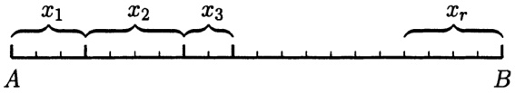
图3.4
就等于所有二项式系数 C n − 1 r − 1 C_{n-1}^{r-1} 2 n − 1 2^{n-1} 2 n − 1 2^{n-1}
现在我们再回到(3.9)式的推导过程上. 引进 f S ( x ) f_{S}(x) v ( S , m ) v(S, m) f S ( x ) f_{S}(x)
注意到 ( 1 + x ) n (1+x)^{n}
( 1 + x ) n = ( 1 + x ) ( 1 + x ) ⋯ ( 1 + x ) . (1+x)^{n}=(1+x)(1+x)\cdots(1+x).
我们来分析一下上式右侧去括号时会出现什么情况。将这 n n 1 , 2 , ⋯ , n 1,2,\cdots,n S = { 1 , 2 , ⋯ , n } S=\{1,2,\cdots,n\} n n x x x x x x x m x^m x x i 1 , i 2 , ⋯ , i m i_1,i_2,\cdots,i_m n − m n-m S S N = { i 1 , ⋯ , i m } N=\{i_1,\cdots,i_m\} x x S S m m N N v ( S , m ) v(S,m) x m x^m ( 1 + x ) n (1+x)^n
( 1 + x ) n = v ( S , 0 ) + v ( S , 1 ) x + ⋯ + v ( S , n ) x n . (1+x)^{n}=v(S,0)+v(S,1)x+\cdots+v(S,n)x^{n}.
将其与(2.21)式作比较，即有 v ( S , m ) = C n m v(S,m)=C_{n}^{m}
这种方法可以推广到更一般的情形．我们考虑将若干一次多项式 x + a i x + a_{i}
( x + a 1 ) ( x + a 2 ) ⋯ ( x + a n ) (x+a_{1})(x+a_{2})\cdots(x+a_{n})
写成 x x n n x x a i a_i i 1 , i 2 , ⋯ , i m i_1, i_2, \cdots, i_m a i 1 , a i 2 , ⋯ , a i m a_{i_1}, a_{i_2}, \cdots, a_{im} n − m n-m x x a i 1 a i 2 ⋯ a i m x n − m a_{i_1} a_{i_2} \cdots a_{i_m} x^{n-m} n − m n-m σ m ( a 1 , ⋯ , a n ) a n − m \sigma_m(a_1, \cdots, a_n) a^{n-m} σ m ( a 1 , ⋯ , a n ) \sigma_m(a_1, \cdots, a_n) a i 1 a i 2 ⋯ a i m a_{i_1} a_{i_2} \cdots a_{i_m} a i 1 a i 2 ⋯ a i m a_{i_1} a_{i_2} \cdots a_{i_m} { i 1 , ⋯ , i m } \{i_1, \cdots, i_m\} m m σ m ( a 1 , ⋯ , a n ) \sigma_m(a_1, \cdots, a_n) C n m C_n^m
σ 1 ( a 1 , ⋯ , a n ) = a 1 + ⋯ + a n , \sigma_{1}(a_{1},\cdots,a_{n})=a_{1}+\cdots+a_{n},
以及 σ 2 ( a 1 , ⋯ , a n ) = a 1 a 2 + a 1 a 3 + ⋯ + a 2 a 3 + ⋯ + a n − 1 a n \sigma_{2}(a_{1},\cdots,a_{n})=a_{1}a_{2}+a_{1}a_{3}+\cdots+a_{2}a_{3}+\cdots+a_{n-1}a_{n} a i a j ( i < j ) a_{i}a_{j}\ (i<j) σ n \sigma_{n} σ n ( a 1 , ⋯ , a n ) = a 1 ⋯ a n \sigma_{n}(a_{1},\cdots,a_{n})=a_{1}\cdots a_{n} σ 1 , ⋯ , σ n \sigma_{1},\cdots,\sigma_{n}
( x + a 1 ) ⋯ ( x + a n ) = x n + σ 1 ( a 1 , ⋯ , a n ) x n − 1 + σ 2 ( a 1 , ⋯ , a n ) x n − 2 + ⋯ + σ n ( a 1 , ⋯ , a n ) . \begin{aligned}\left(x+a_{1}\right)\cdots(x+a_{n})=&x^{n}+\sigma_{1}(a_{1},\cdots,a_{n})x^{n-1}+\sigma_{2}(a_{1},\cdots,a_{n})x^{n-2}\\&+\cdots+\sigma_{n}(a_{1},\cdots,a_{n}).\end{aligned}
这个公式通常被称为韦达公式.
韦达公式揭示了多项式的一个重要性质. 设 f ( x ) f(x) α 1 , ⋯ , α n \alpha_{1}, \cdots, \alpha_{n} f ( x ) f(x) ( x − α 1 ) ⋯ ( x − α n ) (x - \alpha_{1}) \cdots (x - \alpha_{n}) f ( x ) f(x) f ( x ) = c ( x − α 1 ) ⋯ ( x − α n ) f(x) = c(x - \alpha_{1}) \cdots (x - \alpha_{n}) f ( x ) f(x)
f ( x ) = ( x − α 1 ) ⋯ ( x − α n ) . f(x)=(x-\alpha_{1})\cdots(x-\alpha_{n}).
在韦达公式 ( 3.12 ) (3.12) a i = − α i a_i = -\alpha_i σ k \sigma_k k k a i a_i − α i -\alpha_i a i a_i ( − 1 ) k (-1)^k
σ k ( − α 1 , ⋯ , − α n ) = ( − 1 ) k σ k ( α 1 , ⋯ , α n ) . \sigma_{k}(-\alpha_{1},\cdots,-\alpha_{n})=(-1)^{k}\sigma_{k}(\alpha_{1},\cdots,\alpha_{n}).
因此根据 ( 3.12 ) (3.12)
( x − α 1 ) ⋯ ( x − α n ) = x n − σ 1 ( α 1 , ⋯ , α n ) x n − 1 + ⋯ + ( − 1 ) n σ n ( α 1 , ⋯ , α n ) . \begin{aligned}\left(x-\alpha_{1}\right)\cdots\left(x-\alpha_{n}\right)=&x^{n}-\sigma_{1}(\alpha_{1},\cdots,\alpha_{n})x^{n-1}\\&+\cdots+(-1)^{n}\sigma_{n}(\alpha_{1},\cdots,\alpha_{n}).\end{aligned}
这个公式也被称为韦达公式．二次方程的韦达公式是我们熟知的：此时只有两个多项式 σ 1 = α 1 + α 2 \sigma_{1}=\alpha_{1}+\alpha_{2} σ 2 = α 1 α 2 \sigma_{2}=\alpha_{1}\alpha_{2}
我们再次考虑关于子集数目（或者说组合数）的 (3.9) 式。在推导过程中我们利用了二项式公式，而这个公式在第 6 节是借助导数的性质得到的。整个推导过程有点长，因此我们希望能有一个仅需要组合考虑的证明。这里就给出一个这样的证明，不仅如此，我们还附带证明了一个更一般的公式。我们知道，对于集合 S 的任一子集 N，都会有一个划分 S = N + N ¯ S = N + \overline{N} N ¯ \overline{N} S = S 1 + ⋯ + S r S = S_1 + \cdots + S_r n ( S 1 ) = n 1 , ⋯ , n ( S r ) = n r n(S_1) = n_1, \cdots, n(S_r) = n_r ( n 1 , ⋯ , n r ) (n_1, \cdots, n_r) S = S 1 + ⋯ + S r S = S_1 + \cdots + S_r S i S_i n i n_i
因为之前一直认为集合 S 满足 n ( S ) = n n(S) = n ( n 1 , ⋯ , n r ) (n_1, \cdots, n_r) C ( n 1 , ⋯ , n r ) C(n_1, \cdots, n_r) n 1 + ⋯ + n r = n n_1 + \cdots + n_r = n S 1 , ⋯ , S r S_1, \cdots, S_r n ( S 1 ) = n 1 n(S_1) = n_1 n ( S 2 ) = n 2 n(S_2) = n_2 S = S 1 + S 2 S = S_1 + S_2 S = S 2 + S 2 S = S_2 + S_2 n 1 ≠ n 2 n_1 \ne n_2 S = S 1 + S 2 S = S_1 + S_2 S 1 S_1 C ( n 1 , n 2 ) = v ( S , n 1 ) C(n_1,n_2) = v(S,n_1) m < n m < n v ( S , m ) = C ( m , n − m ) v(S,m) = C(m,n-m)
考虑具有型 ( n 1 , ⋯ , n r ) (n_1, \cdots, n_r) S = S 1 + ⋯ + S r S = S_1 + \cdots + S_r n i n_i n 1 > 1 n_1 > 1 a ∈ S 1 a \in S_1 S 1 ′ S_1' S 1 S_1 a a { a } \{a\} S 1 S_1 S 1 = S 1 ′ + { a } S_1 = S_1' + \{a\} S = S 1 + ⋯ + S r S = S_1 + \cdots + S_r S = S 1 ′ + { a } + S 2 + ⋯ + S r S = S_1' + \{a\} + S_2 + \cdots + S_r ( n 1 − 1 , 1 , n 2 , ⋯ , n r ) (n_1 - 1, 1, n_2, \cdots, n_r) ( n 1 , ⋯ , n r ) (n_1, \cdots, n_r) ( n 1 − 1 , 1 , n 2 , ⋯ , n r ) (n_1 - 1, 1, n_2, \cdots, n_r) S = S 1 ′ + { a } + S 2 + ⋯ + S r S = S_1' + \{a\} + S_2 + \cdots + S_r S = S 1 + ⋯ + S r S = S_1 + \cdots + S_r S 1 = S 1 ′ + { a } S_1 = S_1' + \{a\} a ∈ S 1 a \in S_1 ( n 1 , ⋯ , n r ) (n_1, \cdots, n_r) n 1 n_1 ( n 1 − 1 , 1 , n 2 , ⋯ , n r ) (n_1 - 1, 1, n_2, \cdots, n_r)
n 1 C ( n 1 , ⋯ , n r ) = C ( n 1 − 1 , 1 , n 2 , ⋯ , n r ) . n_{1}C(n_{1},\cdots,n_{r})=C(n_{1}-1,1,n_{2},\cdots,n_{r}).
对具有型 ( n 1 − 1 , 1 , n 2 , ⋯ , n r ) (n_{1}-1,1,n_{2},\cdots,n_{r})
( n 1 − 1 ) C ( n 1 − 1 , 1 , n 2 , ⋯ , n r ) = C ( n 1 − 2 , 1 , 1 , n 2 , ⋯ , n r ) , (n_{1}-1)C(n_{1}-1,1,n_{2},\cdots,n_{r})=C(n_{1}-2,1,1,n_{2},\cdots,n_{r}),
即
n 1 ( n 1 − 1 ) C ( n 1 , n 2 , ⋯ , n r ) = C ( n 1 − 2 , 1 , 1 , n 2 , ⋯ , n r ) . n_{1}(n_{1}-1)C(n_{1},n_{2},\cdots,n_{r})=C(n_{1}-2,1,1,n_{2},\cdots,n_{r}).
继续同样的操作 n-1 次，就有
n 1 ! C ( n 1 , n 2 , ⋯ , n r ) = C ( 1 , ⋯ , 1 ⏟ n 1 个 , n 2 , ⋯ , n r ) . n_{1}!C(n_{1},n_{2},\cdots,n_{r})=C\Big(\underbrace{1,\cdots,1}_{n_{1} 个 },n_{2},\cdots,n_{r}\Big).
现在对 C ( 1 , ⋯ , 1 , n 2 , ⋯ , n r ) C(1,\cdots,1,n_2,\cdots,n_r) n 2 n_2
n 2 ! C ( 1 , ⋯ , 1 , n 2 , n 3 , ⋯ , n r ) = C ( 1 , ⋯ , 1 , n 3 , ⋯ , n r ) , n_{2}!C(1,\cdots,1,n_{2},n_{3},\cdots,n_{r})=C(1,\cdots,1,n_{3},\cdots,n_{r}),
其中右侧有 n 1 + n 2 n_{1}+n_{2}
n 1 ! n 2 ! C ( n 1 , ⋯ , n r ) = C ( 1 , ⋯ , 1 ⏟ n 1 + n 2 个 , n 3 , ⋯ , n r ) . n_{1}!n_{2}!C(n_{1},\cdots,n_{r})=C\Big(\underbrace{1,\cdots,1}_{n_{1}+n_{2} 个 },n_{3},\cdots,n_{r}\Big).
按次序继续对余下的各个参数 n i n_{i}
n 1 ! n 2 ! ⋯ n r ! C ( n 1 , ⋯ , n r ) = C ( 1 , ⋯ , 1 ⏟ n 个 ) . n_{1}!n_{2}!\cdots n_{r}!C(n_{1},\cdots,n_{r})=C\Big(\underbrace{1,\cdots,1}_{n 个 }\Big).
最终之所以有 n n n 1 + n 2 + ⋯ + n r = n n_1 + n_2 + \cdots + n_r = n C ( 1 , ⋯ , 1 ) C(1, \cdots, 1) ( n 1 , ⋯ , n r ) (n_1, \cdots, n_r) ( n ) (n) S = S S = S C ( n ) = 1 C(n) = 1
n ! C ( n ) = C ( 1 , ⋯ , 1 ⏟ n 个 ) . n!C(n)=C\Big(\underbrace{1,\cdots,1}_{n 个 }\Big).
因此 C ( 1 , ⋯ , 1 ) = n ! C(1,\cdots,1)=n!
C ( n 1 , ⋯ , n r ) = n ! n 1 ! n 2 ! ⋯ n r ! ( n = n 1 + ⋯ + n r ) . C(n_{1},\cdots,n_{r})=\frac{n!}{n_{1}!n_{2}!\cdots n_{r}!}\qquad(n=n_{1}+\cdots+n_{r}).
当 r=2 时，我们通常将 ( n 1 , n 2 ) (n_{1},n_{2}) ( m , n − m ) (m,n-m) C ( m , n − m ) = v ( S , m ) C(m,n-m)=v(S,m)
注 1．上述推理的最后我们遇到了表达式 C ( 1 , ⋯ , 1 ) C(1,\cdots,1) ( 1 , ⋯ , 1 ) (1,\cdots,1) S = S 1 + ⋯ + S r S = S_1 + \cdots + S_r S i S_i S = { a 1 } + { a n } S = \{a_1\} + \{a_n\} C ( 1 , ⋯ , 1 ) C(1,\cdots,1) a 1 , ⋯ , a n a_1,\cdots,a_n C ( 1 , ⋯ , 1 ) C(1,\cdots,1) n ! n! S = { a , b , c } S = \{a,b,c\}
( a , b , c ) , ( a , c , b ) , ( b , a , c ) , ( b , c , a ) , ( c , a , b ) , ( c , b , a ) . (a,b,c),\quad(a,c,b),\quad(b,a,c),\quad(b,c,a),\quad(c,a,b),\quad(c,b,a).
注2. 当 r = 2 r = 2 C ( n 1 , n 2 ) C(n_1, n_2) r r C ( n 1 , ⋯ , n r ) C(n_1, \cdots, n_r) x 1 , ⋯ , x r x_1, \cdots, x_r ( x 1 + ⋯ + x r ) n (x_1 + \cdots + x_r)^n x 1 n 1 ⋯ x r n r x_1^{n_1} \cdots x_r^{n_r} n i n_i n 1 + ⋯ + n r = n n_1 + \cdots + n_r = n x 1 n 1 ⋯ x r n r x_1^{n_1} \cdots x_r^{n_r} C ( n 1 , ⋯ , n r ) C(n_1, \cdots, n_r) S i S_i ∅ \emptyset n i n_i 0 0 0 ! = 1 0! = 1 v ( S , m ) = C n m v(S, m) = C_n^m r r
比如根据这个公式，我们可以知道 ( x 1 + x 2 + x 3 ) 3 (x_1 + x_2 + x_3)^3 C ( n 1 , n 2 , n 3 ) x 1 n 1 x 2 n 2 x 3 n 3 C(n_1, n_2, n_3) x_1^{n_1} x_2^{n_2} x_3^{n_3} ( n 1 , n 2 , n 3 ) (n_1, n_2, n_3) n 1 + n 2 + n 3 = 3 n_1 + n_2 + n_3 = 3
( x 1 + x 2 + x 3 ) 3 = x 1 3 + x 2 3 + x 3 3 + 3 x 1 2 x 2 + 3 x 1 x 2 2 + 3 x 1 2 x 3 + 3 x 1 x 3 2 + 3 x 2 2 x 3 + 3 x 2 x 3 2 + 6 x 1 x 2 x 3 . \begin{aligned}\left(x_{1}+x_{2}+x_{3}\right)^{3}=&x_{1}^{3}+x_{2}^{3}+x_{3}^{3}+3x_{1}^{2}x_{2}+3x_{1}x_{2}^{2}+3x_{1}^{2}x_{3}\\&+3x_{1}x_{3}^{2}+3x_{2}^{2}x_{3}+3x_{2}x_{3}^{2}+6x_{1}x_{2}x_{3}.\end{aligned}
习题
集合 I = { p , q } I = \{p, q\} S = { a 1 , ⋯ , a n } S = \{a_1, \cdots, a_n\} n n S S N N I n I^n x x a i a_i N N x x i i p p q q U ( S ) U(S) I n I^n
条件参考习题 1，此时 S 的两个子集 N 1 N_{1} N 2 N_{2} I n I^{n}
对于给定的 r r S 1 + ⋯ + S r S_1 + \cdots + S_r r = 2 r = 2
给定 r 和 n，对于所有满足 n 1 + ⋯ + n r = n n_{1}+\cdots+n_{r}=n n i n_{i} C ( n 1 , ⋯ , n r ) C(n_{1},\cdots,n_{r})
将自然数 n n r r n = a 1 ⋯ a r n = a_1 \cdots a_r
给定 n n r r x 1 + ⋯ + x r = n x_1 + \cdots + x_r = n A B AB n + r − 1 n + r - 1 ( x 1 , ⋯ , x r ) (x_1, \cdots, x_r) A A x 1 x_1 x 2 x_2 x 3 = 0 x_3 = 0
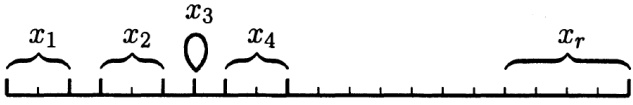
图3.5
若 n ( S ) = 2 m n(S)=2m ( m , m ) (m,m) S = S 1 + S 2 S=S_{1}+S_{2} S = S 1 + S 2 S=S_{1}+S_{2} S = S 2 + S 1 S=S_{2}+S_{1} n ( S ) = 3 m n(S)=3m ( m , m , m ) (m,m,m) S = S 1 + S 2 + S 3 S=S_{1}+S_{2}+S_{3} S 1 , S 2 , S 3 S_{1},S_{2},S_{3} n ( S ) = 2 k + 3 l n(S)=2k+3l ( k , k , l , l , l ) (k,k,l,l,l)
多项式 ( x 1 + ⋯ + x n ) 2 (x_1 + \cdots + x_n)^2 ( x 1 + ⋯ + x n ) 3 (x_1 + \cdots + x_n)^3
在合并同类项之后，多项式 ( x 1 + ⋯ + x r ) n (x_1 + \cdots + x_r)^n
用多项式 σ 1 \sigma_1 σ 2 \sigma_2 a 1 2 + ⋯ + a n 2 a_1^2 + \cdots + a_n^2 x n + a x n − 1 + b x n − 2 + ⋯ x^n + ax^{n-1} + bx^{n-2} + \cdots n n a 2 ≥ 2 b a^2 \geq 2b a 2 = 2 b a^2 = 2b
设 n ( S ) = n n(S) = n C n k C_n^k v ( S , k ) v(S, k) C n k = C n − 1 k + C n − 1 k − 1 C_n^k = C_{n-1}^k + C_{n-1}^{k-1} C ( n 1 , ⋯ , n k ) C(n_1, \cdots, n_k)
试给出等式 C n m = C n n − m C_{n}^{m}=C_{n}^{n-m}
9 集代数
对于集合 S S S 1 S_1 S 2 S_2 S 1 ∩ S 2 = ⌀ S_1 \cap S_2 = \varnothing S 1 ∪ S 2 S_1 \cup S_2 S 1 S_1 S 2 S_2 S 1 S_1 S 2 S_2 S 1 ∪ S 2 = S 1 + S 2 S_1 \cup S_2 = S_1 + S_2
n ( S 1 ∪ S 2 ) = n ( S 1 ) + n ( S 2 ) . n(S_{1}\cup S_{2})=n(S_{1})+n(S_{2}).
S 1 ∩ S 2 S_1 \cap S_2 S 1 ′ S_1' S 1 ∩ S 2 S_1 \cap S_2 S 1 S_1
n ( S 1 ) = n ( S 1 ∩ S 2 ) + n ( S 1 ′ ) . n(S_{1})=n(S_{1}\cap S_{2})+n(S_{1}^{\prime}).
同理可得
n ( S 2 ) = n ( S 1 ∩ S 2 ) + n ( S 2 ′ ) , n(S_{2})=n(S_{1}\cap S_{2})+n(S_{2}^{\prime}),
其中 S 2 ′ S_2' S 1 ∩ S 2 S_1 \cap S_2 S 2 S_2
n ( S 1 ) + n ( S 2 ) = 2 n ( S 1 ∩ S 2 ) + n ( S 1 ′ ) + n ( S 2 ′ ) . n(S_{1})+n(S_{2})=2n(S_{1}\cap S_{2})+n(S_{1}^{\prime})+n(S_{2}^{\prime}).
因为 S 1 ∩ S 2 S_1 \cap S_2 S 1 ′ S_1' S 2 ′ S_2' S 1 ∪ S 2 S_1 \cup S_2 S 1 ∪ S 2 = S 1 ∩ S 2 + S 1 ′ + S 2 ′ S_1 \cup S_2 = S_1 \cap S_2 + S_1' + S_2' n ( S 1 ∪ S 2 ) = n ( S 1 ∩ S 2 ) + n ( S 1 ′ ) + n ( S 2 ′ ) n(S_1 \cup S_2) = n(S_1 \cap S_2) + n(S_1') + n(S_2')
n ( S 1 ) + n ( S 2 ) = n ( S 1 ∩ S 2 ) + n ( S 1 ∪ S 2 ) n(S_{1})+n(S_{2})=n(S_{1}\cap S_{2})+n(S_{1}\cup S_{2})
或
n ( S 1 ∪ S 2 ) = n ( S 1 ) + n ( S 2 ) − n ( S 1 ∩ S 2 ) . n(S_{1}\cup S_{2})=n(S_{1})+n(S_{2})-n(S_{1}\cap S_{2}).
这就是我们要探求的关系式．我们进一步的目标是将其推广，以计算任意多个集合的并集中元素的个数 n ( S 1 ∪ ⋯ ∪ S r ) n(S_1 \cup \cdots \cup S_r)
首先需要注意的是，多个集合的并集 S 1 ∪ S 2 ∪ ⋯ ∪ S r S_1 \cup S_2 \cup \cdots \cup S_r
S 1 ∪ S 2 ∪ S 3 = ( S 1 ∪ S 2 ) ∪ S 3 . S_{1}\cup S_{2}\cup S_{3}=\left(S_{1}\cup S_{2}\right)\cup S_{3}.
对任意 k 个子集的并，我们同样有
S 1 ∪ S 2 ∪ ⋯ ∪ S k = ( S 1 ∪ S 2 ∪ ⋯ ∪ S k − 1 ) ∪ S k . S_{1}\cup S_{2}\cup\cdots\cup S_{k}=\left(S_{1}\cup S_{2}\cup\cdots\cup S_{k-1}\right)\cup S_{k}.
如果集合 S S S 1 , ⋯ , S k S_1, \cdots, S_k S 1 ∪ ⋯ ∪ S k = S 1 + ⋯ + S k S_1 \cup \cdots \cup S_k = S_1 + \cdots + S_k n ( S 1 ∪ ⋯ ∪ S k ) = n ( S 1 ) + ⋯ + n ( S k ) n(S_1 \cup \cdots \cup S_k) = n(S_1) + \cdots + n(S_k)
( S 1 ∪ S 2 ∪ ⋯ ∪ S k ) ∩ N = ( S 1 ∩ N ) ∪ ( S 2 ∩ N ) ∪ ⋯ ∪ ( S k ∩ N ) . (S_{1}\cup S_{2}\cup\cdots\cup S_{k})\cap N=(S_{1}\cap N)\cup(S_{2}\cap N)\cup\cdots\cup(S_{k}\cap N). a ∈ S a \in S a ∈ ( S 1 ∪ S 2 ∪ ⋯ ∪ S k ) ∩ N a \in (S_1 \cup S_2 \cup \cdots \cup S_k) \cap N a ∈ S 1 ∪ S 2 ∪ ⋯ ∪ S k a \in S_1 \cup S_2 \cup \cdots \cup S_k a ∈ N a \in N a ∈ N a \in N a a S i S_i a ∈ S i ∩ N a \in S_i \cap N a ∈ ( S 1 ∩ N ) ∪ ( S 2 ∩ N ) ∪ ⋯ ∪ ( S k ∩ N ) a \in (S_1 \cap N) \cup (S_2 \cap N) \cup \cdots \cup (S_k \cap N) a 1 , ⋯ , a k a_1, \cdots, a_k b b S 1 , ⋯ , S k S_1, \cdots, S_k N N ( a 1 + ⋯ + a k ) b = a 1 b + ⋯ + a k b (a_1 + \cdots + a_k)b = a_1b + \cdots + a_k b S S
现在我们来推导关于 n ( S 1 ∪ S 2 ∪ S 3 ) n(S_1 \cup S_2 \cup S_3)
S 1 ∪ S 2 ∪ S 3 = ( S 1 ∪ S 2 ) ∪ S 3 , S_{1}\cup S_{2}\cup S_{3}=\left(S_{1}\cup S_{2}\right)\cup S_{3},
所以应用 （ 3.20 ） （3.20）
n ( S 1 ∪ S 2 ∪ S 3 ) = n ( ( S 1 ∪ S 2 ) ∪ S 3 ) = n ( S 1 ∪ S 2 ) + n ( S 3 ) − n ( ( S 1 ∪ S 2 ) ∩ S 3 ) . n\bigl(S_{1}\cup S_{2}\cup S_{3}\bigr)=n\bigl(\bigl(S_{1}\cup S_{2}\bigr)\cup S_{3}\bigr)=n\bigl(S_{1}\cup S_{2}\bigr)+n\bigl(S_{3}\bigr)-n\bigl(\bigl(S_{1}\cup S_{2}\bigr)\cap S_{3}\bigr).
对于 n ( S 1 ∪ S 2 ) n(S_1 \cup S_2) ( S 1 ∪ S 2 ) ∩ S 3 = ( S 1 ∩ S 3 ) ∪ ( S 2 ∩ S 3 ) (S_1 \cup S_2) \cap S_3 = (S_1 \cap S_3) \cup (S_2 \cap S_3)
n ( S 1 ∪ S 2 ∪ S 3 ) = n ( S 1 ) + n ( S 2 ) + n ( S 3 ) − n ( S 1 ∩ S 2 ) − n ( S 1 ∩ S 3 ) − n ( S 2 ∩ S 3 ) + n ( ( S 1 ∩ S 3 ) ∩ ( S 2 ∩ S 3 ) ) . \begin{aligned}n(S_{1}\cup S_{2}\cup S_{3})=&n(S_{1})+n(S_{2})+n(S_{3})-n(S_{1}\cap S_{2})-n(S_{1}\cap S_{3})\\&-n(S_{2}\cap S_{3})+n((S_{1}\cap S_{3})\cap(S_{2}\cap S_{3})).\end{aligned}
很明显有
( S 1 ∩ S 3 ) ∩ ( S 2 ∩ S 3 ) = S 1 ∩ S 2 ∩ S 3 , (S_{1}\cap S_{3})\cap(S_{2}\cap S_{3})=S_{1}\cap S_{2}\cap S_{3},
因此最后一项为
n ( S 1 ∩ S 2 ∩ S 3 ) . n(S_{1}\cap S_{2}\cap S_{3}).
至此我们就得到了公式
n ( S 1 ∪ S 2 ∪ S 3 ) = n ( S 1 ) + n ( S 2 ) + n ( S 3 ) − n ( S 1 ∩ S 2 ) − n ( S 1 ∩ S 3 ) − n ( S 2 ∩ S 3 ) + n ( S 1 ∩ S 2 ∩ S 3 ) . \begin{aligned}n(S_{1}\cup S_{2}\cup S_{3})=&n(S_{1})+n(S_{2})+n(S_{3})-n(S_{1}\cap S_{2})-n(S_{1}\cap S_{3})\\&-n(S_{2}\cap S_{3})+n(S_{1}\cap S_{2}\cap S_{3}).\end{aligned}
现在你已经可以猜出 n ( S 1 ∪ ⋯ ∪ S r ) n(S_1 \cup \cdots \cup S_r) n ( S i 1 ∩ ⋯ ∩ S i k ) n(S_{i_1} \cap \cdots \cap S_{i_k}) S i j S_{i_j} S 1 , ⋯ , S r S_1, \cdots, S_r k k r r k k n ( S i 1 ∩ ⋯ ∩ S i k ) n(S_{i_1} \cap \cdots \cap S_{i_k}) k k n ( S i 1 ∩ ⋯ ∩ S i k ) n(S_{i_1} \cap \cdots \cap S_{i_k}) ( − 1 ) k − 1 (-1)^{k-1}
按照 r = 3 r = 3 r r S 1 ∪ ⋯ ∪ S r S_1 \cup \cdots \cup S_r ( S 1 ∪ ⋯ ∪ S r − 1 ) ∪ S r (S_1 \cup \cdots \cup S_{r-1}) \cup S_r
n ( S 1 ∪ ⋯ ∪ S r ) = n ( S 1 ∪ ⋯ ∪ S r − 1 ) + n ( S r ) − n ( ( S 1 ∪ ⋯ ∪ S r − 1 ) ∩ S r ) . n\bigl(S_{1}\cup\cdots\cup S_{r}\bigr)=n\bigl(S_{1}\cup\cdots\cup S_{r-1}\bigr)+n\bigl(S_{r}\bigr)-n\bigl(\bigl(S_{1}\cup\cdots\cup S_{r-1}\bigr)\cap S_{r}\bigr). n ( S 1 ∪ ⋯ ∪ S r − 1 ) n(S_1 \cup \cdots \cup S_{r-1})
( S 1 ∪ ⋯ ∪ S r − 1 ) ∩ S r = ( S 1 ∩ S r ) ∪ ⋯ ∪ ( S r − 1 ∩ S r ) . (S_{1}\cup\cdots\cup S_{r-1})\cap S_{r}=(S_{1}\cap S_{r})\cup\cdots\cup(S_{r-1}\cap S_{r}).
对这个表达式继续应用归纳假设．至于如下交集
( S i 1 ∩ S r ) ∩ ⋯ ∩ ( S i k ∩ S r ) , (S_{i_{1}}\cap S_{r})\cap\cdots\cap(S_{i_{k}}\cap S_{r}),
它们显然等于 S i 1 ∩ ⋯ ∩ S i k ∩ S r S_{i_1} \cap \cdots \cap S_{i_k} \cap S_r S r S_r n ( ( S 1 ∩ S r ) ∪ ⋯ ∪ ( S r − 1 ∩ S r ) ) n((S_1 \cap S_r) \cup \cdots \cup (S_{r-1} \cap S_r)) ( − 1 ) k − 1 (-1)^{k-1} n ( S 1 ∪ ⋯ ∪ S r ) n(S_1 \cup \cdots \cup S_r) ( − 1 ) k (-1)^k S i 1 ∩ ⋯ ∩ S i k ∩ S r S_{i_1} \cap \cdots \cap S_{i_k} \cap S_r
将得到的 n ( S 1 ∪ ⋯ ∪ S r ) n(S_1 \cup \cdots \cup S_r) S 1 ∪ ⋯ ∪ S r ¯ \overline{S_1 \cup \cdots \cup S_r} N ⊂ S N \subset S S = N + N ¯ S = N + \overline{N} n ( N ¯ ) = n ( S ) − n ( N ) n(\overline{N}) = n(S) - n(N) n ( S 1 ∪ ⋯ ∪ S r ¯ ) n(\overline{S_1 \cup \cdots \cup S_r}) ( − 1 ) k n ( S i 1 ∩ ⋯ ∩ S i k ) (-1)^k n(S_{i_1} \cap \cdots \cap S_{i_k}) S i j S_{i_j} S 1 , ⋯ , S r S_1, \cdots, S_r k = 0 k = 0 n ( S ) n(S)
n ( S 1 ∪ ⋯ ∪ S r ¯ ) = n ( S ) − n ( S 1 ) − ⋯ − n ( S r ) + n ( S 1 ∩ S 2 ) + ⋯ + ( − 1 ) r n ( S 1 ∩ ⋯ ∩ S r ) . \begin{aligned}n\big(\overline{{S_{1}\cup\cdots\cup S_{r}}}\big)=&n\big(S\big)-n\big(S_{1}\big)-\cdots-n\big(S_{r}\big)\\&+n\big(S_{1}\cap S_{2}\big)+\cdots+(-1)^{r}n\big(S_{1}\cap\cdots\cap S_{r}\big).\end{aligned}
这个公式中有表达式 n ( S i 1 ∩ ⋯ ∩ S i k ) n(S_{i_1} \cap \cdots \cap S_{i_k}) i 1 , ⋯ , i k i_1, \cdots, i_k r r x = 1 x = 1 a i = − x i a_i = -x_i x i 1 ⋯ x i k x_{i_1} \cdots x_{i_k} n ( S i 1 ∩ ⋯ ∩ S i k ) n(S_{i_1} \cap \cdots \cap S_{i_k})
n ( S 1 ∪ ⋯ ∪ S r ¯ ) = n ( 1 − S 1 ) ⋯ ( 1 − S r ) . n\bigl(\overline{{S_{1}\cup\cdots\cup S_{r}}}\bigr)=n(1-S_{1})\cdots(1-S_{r}).
上式解释如下：将右侧中的诸 S i S_i n ⋅ S i 1 ⋯ S i k n \cdot S_{i_1} \cdots S_{i_k} n ( S i 1 ∩ ⋯ ∩ S i k ) n(S_{i_1} \cap \cdots \cap S_{i_k}) n = n ( S ) n = n(S) n ⋅ 1 n \cdot 1
这样的表达式可以帮助我们更简单的回忆（3.21）式．在代数中，如果关乎不同问题的两个关系式具有完全相同的形式，那么我们总能发明新的定义，使得其中一个公式正好与另一个对应起来．这里以（3.21）式、（3.22）式和韦达公式（3.13）为例做一个展示．
为此我们需要考虑定义在集合 S S a ∈ S a \in S f f a a f ( a ) f(a) f f a a S S a a f ( a ) f(a) S = { a , b , c } S = \{a, b, c\} f f g g S S
因此，对于集合 S = { a 1 , ⋯ , a n } S = \{a_1, \cdots, a_n\} ( f ( a 1 ) , ⋯ , f ( a n ) ) (f(a_1), \cdots, f(a_n)) f f g g
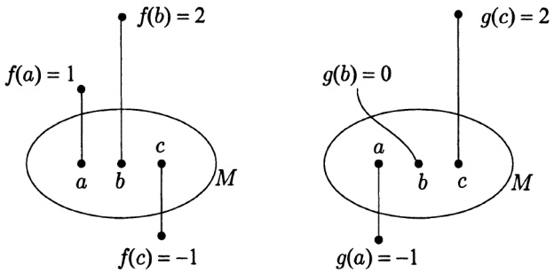
图3.6
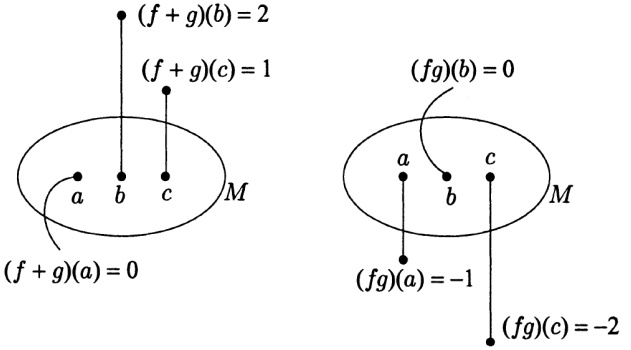
图3.7
同一个集合上的两个函数，那么可以通过 ( f + g ) ( a ) = f ( a ) + g ( a ) (f+g)(a)=f(a)+g(a) ( f g ) ( a ) = f ( a ) g ( a ) (fg)(a)=f(a)g(a) f + g f+g f g fg f + g f+g
因为函数的运算实质上是函数值的运算，所以这些运算与数的运算具有相同的性质，如交换律、结合律、分配律等．对于任何关于数的等式，我们都可以将其中的量替换为集合 S 上的任意一个函数．如果函数 f S ( a ) f_S(a) a ∈ S a \in S 1 ⋅ f = f 1 \cdot f = f
现在我们将函数的概念与子集的概念联系起来．对于任意的子集 N ⊂ S N \subset S N N N N N N f N f_N a ∈ N a \in N f N ( a ) = 1 f_N(a) = 1 a ∉ N a \notin N f N ( a ) = 0 f_N(a) = 0 f N ( a ) f_N(a) N N f N ( a ) = 1 f_N(a) = 1 a ∈ S a \in S N ⊂ S N \subset S p p q q
子集的若干性质可以通过它们的示性函数简单地表示出来．比如对于全集 S，它的示性函数在每个元素上都取值 1，即有 f S = 𝟏 f_S = \mathbf{1} N ¯ \overline{N} N N f N ¯ = 𝟏 − f N f_{\overline{N}} = \mathbf{1} - f_N a ∈ N a \in N f N ( a ) = 1 f_N(a) = 1 1 − f N ( a ) = 0 1 - f_N(a) = 0 f N ¯ f_{\overline{N}} a ∈ N ¯ a \in \overline{N} N 1 N_1 N 2 N_2 f N 1 ∩ N 2 = f N 1 f N 2 f_{N_1 \cap N_2} = f_{N_1} f_{N_2} a ∈ N 1 a \in N_1 a ∈ N 2 a \in N_2 f N 1 f N 2 = 1 ⋅ 1 = 1 f_{N_1} f_{N_2} = 1 \cdot 1 = 1 f N 1 ∩ N 2 ( a ) f_{N_1 \cap N_2}(a) a a N 1 N_1 N 2 N_2 f N 1 ( a ) f_{N_1}(a) f N 2 ( a ) f_{N_2}(a) f N 1 f N 2 ( a ) = 0 f_{N_1} f_{N_2}(a) = 0 f N 1 ∩ N 2 ( a ) f_{N_1 \cap N_2}(a)
显然这个关系式对任意有限多个子集都是成立的：
如果 N ′ = N 1 ∩ ⋯ ∩ N r N^{\prime}=N_{1}\cap\cdots\cap N_{r} f N ′ = f N 1 ⋯ f N r f_{N^{\prime}}=f_{N_{1}}\cdots f_{N_{r}}
现在我们可以用示性函数的语言重写 (3.21) 式. 首先注意到 S 1 ¯ ∪ ⋯ ∪ S r ¯ \overline{S_1} \cup \cdots \cup \overline{S_r} S 1 ¯ ∩ ⋯ ∩ S r ¯ \overline{S_1} \cap \cdots \cap \overline{S_r} a a S i ¯ \overline{S_i} S i S_i S 1 ∪ ⋯ ∪ S r S_1 \cup \cdots \cup S_r S 1 ¯ ∪ ⋯ ∪ S r ¯ \overline{S_1} \cup \cdots \cup \overline{S_r}
f S 1 ∪ ⋯ ∪ S r ¯ = f S 1 ¯ ∩ ⋯ ∩ S r ¯ = f S 1 ¯ ⋅ ⋯ ⋅ f S r ¯ . f_{\overline{{S_{1}\cup\cdots\cup S_{r}}}}=f_{\overline{{S_{1}}}\cap\cdots\cap\overline{{S_{r}}}}=f_{\overline{{S_{1}}}}\cdot\cdots\cdot f_{\overline{{S_{r}}}}.
再因为 f S i ¯ = 𝟏 − f S i f_{\overline{S_i}} = \mathbf{1} - f_{S_i}
f S 1 ∪ ⋯ ∪ S r ¯ = ( 𝟏 − f S 1 ) ( 𝟏 − S 2 ) ⋯ ( 𝟏 − f S r ) . \begin{array}{r}{f_{\overline{{S_{1}\cup\cdots\cup S_{r}}}}=\big(\mathbf{1}-f_{S_{1}}\big)\big(\mathbf{1}-S_{2}\big)\cdots\big(\mathbf{1}-f_{S_{r}}\big).}\end{array}
在韦达公式 (3.13) 中令 x = 1 x = 1 α i = f S i \alpha_i = f_{S_i}
f S 1 ∪ ⋯ ∪ S r ¯ = 𝟏 − σ 1 ( f S 1 , ⋯ , f S r ) + σ 2 ( f S 1 , ⋯ , f S r ) − ⋯ + ( − 1 ) r σ r ( f S 1 , ⋯ , f S r ) . f_{\overline{{S_{1}\cup\cdots\cup S_{r}}}}=\mathbf{1}-\sigma_{1}(f_{S_{1}},\cdots,f_{S_{r}})+\sigma_{2}(f_{S_{1}},\cdots,f_{S_{r}})-\cdots+(-1)^{r}\sigma_{r}(f_{S_{1}},\cdots,f_{S_{r}}).
这里的 σ k ( f S 1 , ⋯ , f S r ) \sigma_{k}(f_{S_{1}},\cdots,f_{S_{r}}) f S i 1 ⋯ f S i k f_{S_{i_{1}}}\cdots f_{S_{i_{k}}} f S i 1 ⋯ f S i k = f S i 1 ∩ ⋯ ∩ S i k f_{S_{i_{1}}}\cdots f_{S_{i_{k}}}=f_{S_{i_{1}}\cap\cdots\cap S_{i_{k}}}
f S 1 ∪ ⋯ ∪ S r ¯ = 𝟏 − f S 1 − ⋯ − f S r + ⋯ + ( − 1 ) r f S 1 ∩ ⋯ ∩ S r . \begin{array}{r}{f_{\overline{{S_{1}\cup\cdots\cup S_{r}}}}=\mathbf{1}-f_{S_{1}}-\cdots-f_{S_{r}}+\cdots+(-1)^{r}f_{S_{1}\cap\cdots\cap S_{r}}.}\end{array}
右侧即是所有的函数 f S i 1 ∩ ⋯ ∩ S i k f_{S_{i_1} \cap \cdots \cap S_{i_k}} ( − 1 ) k (-1)^k
需要注意的是，我们得到的结论已经不仅仅是（3.21）式了．我们得到的表达式并不是关于集合 S 1 ∪ ⋯ ∪ S r ¯ \overline{S_1 \cup \cdots \cup S_r} n ( S 1 ∪ ⋯ ∪ S r ¯ ) n(\overline{S_1 \cup \cdots \cup S_r})
为了由此得到 (3.21) 式，我们需要再从函数返回到数．因为 S 是有限集，所以对任意函数 f，我们可以定义数 S f S_f f ( a ) f(a) a ∈ S a \in S S = { a 1 , ⋯ , a n } S = \{a_1, \cdots, a_n\} S f = f ( a 1 ) + ⋯ + f ( a n ) S_f = f(a_1) + \cdots + f(a_n) S f = 2 S_f = 2 S g = 1 S_g = 1 S ( f + g ) = S f + S g S(f + g) = S_f + S_g f + g f + g a i a_i f ( a i ) + g ( a i ) f(a_{i}) + g(a_{i})
S ( f + g ) = [ f ( a 1 ) + g ( a 1 ) ] + ⋯ + [ f ( a n ) + g ( a n ) ] = [ f ( a 1 ) + ⋯ + f ( a n ) ] + [ g ( a 1 ) + ⋯ + g ( a n ) ] = S f + S g . \begin{aligned}S(f+g)&=\left[f(a_{1})+g(a_{1})\right]+\cdots+\left[f(a_{n})+g(a_{n})\right]\\&=\left[f(a_{1})+\cdots+f(a_{n})\right]+\left[g(a_{1})+\cdots+g(a_{n})\right]\\&=Sf+Sg.\\ \end{aligned}
如果 f N f_N N N a ∈ N a \in N f N ( a ) = 1 f_N(a) = 1 S f N = n ( N ) Sf_N = n(N)
现在对(3.24)式两边的函数同时考虑 Sf，则根据上述性质即得(3.21)式.
这里给出 (3.21) 式的两个应用．第一个应用所讨论的问题是欧拉曾经考虑过的，它讨论的是集合排列的问题．在上一节的末尾（见注 1），我们将集合 S 中的元素按一定次序进行摆放称为集合的一个排列．如果 n ( S ) = n n(S) = n n ! n! S = { a , b , c } S = \{a, b, c\} n ! n! ( a 1 , ⋯ , a n ) (a_1, \cdots, a_n) n = 3 n = 3 ( c , a , b ) (c, a, b) ( b , c , a ) (b, c, a)
对于一般情形，(3.21)式可以很容易的加以解决。记 P P S S n ( P ) = n ! n(P) = n! i i a i a_i P i P_i n ( P 1 ∪ ⋯ ∪ P n ¯ ) n(\overline{P_1 \cup \cdots \cup P_n}) S S S i S_i P P P i P_i n ( P i 1 ∩ ⋯ ∩ P i k ) n(P_{i_1} \cap \cdots \cap P_{i_k}) P i 1 ∩ ⋯ ∩ P i k P_{i_1} \cap \cdots \cap P_{i_k} i 1 i_1 a i 1 a_{i_1} i k i_k a i k a_{i_k} { a i 1 , ⋯ , a i k } ¯ \overline{\{a_{i_1}, \cdots, a_{i_k}\}} n ( { a i 1 , ⋯ , a i k } ¯ ) = n − k n(\overline{\{a_{i_1}, \cdots, a_{i_k}\}}) = n - k n ( P i 1 ∩ ⋯ ∩ P i k ) = ( n − k ) ! n(P_{i_1} \cap \cdots \cap P_{i_k}) = (n - k)! k k P i 1 ∩ ⋯ ∩ P i k P_{i_1} \cap \cdots \cap P_{i_k} ( n − k ) ! (n - k)! { a i 1 , ⋯ , a i k } ⊂ { a 1 , ⋯ , a n } \{a_{i_1}, \cdots, a_{i_k}\} \subset \{a_1, \cdots, a_n\} C n k C_n^k P i 1 ∩ ⋯ ∩ P i k P_{i_1} \cap \cdots \cap P_{i_k} C n k C_n^k
C n k ( n − k ) ! = n ! k ! ( n − k ) ! ( n − k ) ! = n ! k ! , C_{n}^{k}(n-k)!=\frac{n!}{k!(n-k)!}(n-k)!=\frac{n!}{k!},
所以由 （ 3.21 ） （3.21）
n ( P 1 ∪ ⋯ ∪ P n ¯ ) = n ! − n ! 1 ! + n ! 2 ! − ⋯ + ( − 1 ) n n ! n ! = n ! ( 1 − 1 1 ! + 1 2 ! − ⋯ + ( − 1 ) n n ! ) . \begin{align*}
n\big(\overline{P_{1}\cup\cdots\cup P_{n}}\big)&=n!-\frac{n!}{1!}+\frac{n!}{2!}-\cdots+(-1)^{n}\frac{n!}{n!}\\&=n!\Big(1-\frac{1}{1!}+\frac{1}{2!}-\cdots+\frac{(-1)^{n}}{n!}\Big).
\end{align*}
这就是欧拉发现的公式．他对这些排列在所有排列中占的“比例”（即上述结果与 n! 的比值）很感兴趣．可以证明，当 n 逐渐增大时，比值 1 − 1 / 1 ! + 1 / 2 ! − ⋯ + ( − 1 ) n / n ! 1 - 1/1! + 1/2! - \cdots + (-1)^n/n!
（3.21）式的第二个应用与自然数的性质有关．设 n 是一个自然数， p 1 , ⋯ , p r p_{1},\cdots,p_{r} p i p_{i}
1,2,⋯,n 构成的集合，S i S_i S S p i p_i n ( S 1 ∪ ⋯ ∪ S r ¯ ) n(\overline{S_1 \cup \cdots \cup S_r}) n ( S i 1 ∩ ⋯ ∩ S i k ) n(S_{i_1} \cap \cdots \cap S_{i_k}) S i 1 ∩ ⋯ ∩ S i k S_{i_1} \cap \cdots \cap S_{i_k} n n p i 1 , p i 2 , ⋯ , p i k p_{i_1}, p_{i_2}, \cdots, p_{i_k} n n p i 1 ⋯ p i k p_{i_1} \cdots p_{i_k} m m n n n n m m t = m u t = mu u u t ≤ n t \leq n u ≤ n / m u \leq n/m u u 1 , 2 , ⋯ , n / m 1,2,\cdots,n/m n / m n/m m = p i 1 ⋯ p i k m = p_{i_1} \cdots p_{i_k} n ( S i 1 ∩ ⋯ ∩ S i k ) = n / ( p i 1 ⋯ p i k ) n(S_{i_1} \cap \cdots \cap S_{i_k}) = n/(p_{i_1} \cdots p_{i_k})
n ( S 1 ∪ ⋯ ∪ S r ¯ ) = n − n p 1 − ⋯ − n p r + n p 1 p 2 + ⋯ + ( − 1 ) r n p 1 ⋯ p r . n\bigl(\overline{{S_{1}\cup\cdots\cup S_{r}}}\bigr)=n-\frac{n}{p_{1}}-\cdots-\frac{n}{p_{r}}+\frac{n}{p_{1}p_{2}}+\cdots+(-1)^{r}\frac{n}{p_{1}\cdots p_{r}}.
上式右侧可以写作
n ( 1 − 1 p 1 − 1 p 2 − ⋯ + 1 p 1 p 2 + ⋯ + ( − 1 ) r 1 p 1 ⋯ p r ) . n\Bigl(1-\frac{1}{p_{1}}-\frac{1}{p_{2}}-\cdots+\frac{1}{p_{1}p_{2}}+\cdots+(-1)^{r}\frac{1}{p_{1}\cdots p_{r}}\Bigr).
利用韦达公式（在(3.13)中令x=1及 α i = 1 / p i \alpha_{i}=1/p_{i}
( 1 − 1 p 1 ) ( 1 − 1 p 2 ) ⋅ ⋅ ⋅ ( 1 − 1 p r ) . \Big(1-\frac{1}{p_{1}}\Big)\Big(1-\frac{1}{p_{2}}\Big)\cdot\cdot\cdot\Big(1-\frac{1}{p_{r}}\Big).
因此，不超过 n 且因数中不含任一 p i p_{i}
n ( 1 − 1 p 1 ) ( 1 − 1 p 2 ) ⋯ ( 1 − 1 p r ) . n\Big(1-\frac{1}{p_{1}}\Big)\Big(1-\frac{1}{p_{2}}\Big)\cdots\Big(1-\frac{1}{p_{r}}\Big).
比较特殊的一种情形是 p 1 , ⋯ , p r p_1, \cdots, p_r n n n n p i p_i n n n n t t n n d d d d p i p_i p i p_i t t p 1 , ⋯ , p r p_1, \cdots, p_r n n n n n n φ ( n ) \varphi(n) n = 675 = 3 3 × 5 2 n = 675 = 3^3 \times 5^2 675 × ( 1 − 1 / 3 ) ( 1 − 1 / 5 ) = 360 675 \times (1 - 1/3)(1 - 1/5) = 360
现在假定 p 1 , p 2 , ⋯ , p r p_1, p_2, \cdots, p_r n n n n p i p_i n n p i 1 ⋯ p i k p_{i_1} \cdots p_{i_k} m m n n m m t = m u t = mu m u ≤ n mu \leq n u u r = t − m u < m r = t - mu < m n = m u + r n = mu + r 0 ≤ r < m 0 \leq r < m n n m m u u n n m m [ n / m ] [n/m] n n p 1 , p 2 , ⋯ , p r p_1, p_2, \cdots, p_r
n − [ n p 1 ] − [ n p 2 ] − ⋯ + [ n p 1 p 2 ] + ⋯ + ( − 1 ) r [ n p 1 ⋯ p r ] . n-\left[\frac{n}{p_{1}}\right]-\left[\frac{n}{p_{2}}\right]-\cdots+\left[\frac{n}{p_{1}p_{2}}\right]+\cdots+(-1)^{r}\left[\frac{n}{p_{1}\cdots p_{r}}\right].
上式不如 (3.25) 式简洁，但可以近似的写作同样的形式．为此我们回到带余除法： n = m u + r n = mu + r 0 ≤ r < m 0 \leq r < m u = [ n / m ] u = [n/m] n = m u + r n = mu + r m m n / m = u + r / m n/m = u + r/m
因为 0 ≤ r < m 0 \leq r < m n / m − 1 < [ n / m ] ≤ n / m n/m - 1 < [n/m] \leq n/m [ n / m ] [n/m] n / m n/m ( 3.26 ) (3.26) ( 3.26 ) (3.26) { 1 , ⋯ , r } \{1, \cdots, r\} { i 1 , ⋯ , i k } \{i_1, \cdots, i_k\} 2 r 2^r ( 3.26 ) (3.26) 2 r 2^r 2 r 2^r ( 3.26 ) (3.26)
n − n p 1 − ⋯ − n p r + n p 1 p 2 + ⋯ + ( − 1 ) r n p 1 ⋯ p r n-\frac{n}{p_{1}}-\cdots-\frac{n}{p_{r}}+\frac{n}{p_{1}p_{2}}+\cdots+(-1)^{r}\frac{n}{p_{1}\cdots p_{r}}
的误差不超过 2 r 2^{r}
n ( 1 − 1 p 1 ) ⋯ ( 1 − 1 p r ) , n\Big(1-\frac{1}{p_{1}}\Big)\cdots\Big(1-\frac{1}{p_{r}}\Big),
若设不超过 n 且因数中不含 p 1 , ⋯ , p r p_{1}, \cdots, p_{r}
| N − n ( 1 − 1 p 1 ) ⋯ ( 1 − 1 p r ) | ≤ 2 r . \left|N-n\left(1-\frac{1}{p_{1}}\right)\cdots\left(1-\frac{1}{p_{r}}\right)\right|\leq2^{r}.
比如我们有三个素数 p, q, r，则 N 与 n ( 1 − 1 / p ) ( 1 − 1 / q ) ( 1 − 1 / r ) n(1-1/p)(1-1/q)(1-1/r)
习题：
确保自己能断定关系式 S 1 ∩ ⋯ ∩ S k = ( S 1 ∩ ⋯ ∩ S k 1 ) ∩ S k S_1 \cap \cdots \cap S_k = (S_1 \cap \cdots \cap S_{k_1}) \cap S_k ( S 1 ∩ ⋯ ∩ S k ) ∪ N = ( S 1 ∪ N ) ∩ ⋯ ∩ ( S k ∪ N ) (S_1 \cap \cdots \cap S_k) \cup N = (S_1 \cup N) \cap \cdots \cap (S_k \cup N) ( a 1 + ⋯ + a k ) b = a 1 b + ⋯ + a k b (a_1 + \cdots + a_k)b = a_1b + \cdots + a_k b
确保自己能明白下述结论：一般的，对于每个关于子集间交与并运算的关系式，都有一个调换了交与并运算的关系式与之相对应．比如， S 1 ∪ S 2 ¯ = S 1 ¯ ∩ S 2 ¯ \overline{S_1 \cup S_2} = \overline{S_1} \cap \overline{S_2} S 1 ∩ S 2 ¯ = S 1 ¯ ∪ S 2 ¯ \overline{S_1 \cap S_2} = \overline{S_1} \cup \overline{S_2}
设 a 和 b 都是自然数，且 0 < a < b，则在区间 [ 0 , 2 π b ] [0, 2\pi b] sin a x \sin ax
对于自然数 a 1 , ⋯ , a m a_1, \cdots, a_m max ( a 1 , ⋯ , a m ) \max(a_1, \cdots, a_m) min ( a 1 , ⋯ , a m ) \min(a_1, \cdots, a_m) N = max ( a 1 , ⋯ , a m ) N = \max(a_1, \cdots, a_m) S = { 1 , ⋯ , N } S = \{1, \cdots, N\} S i S_i a j < a i a_j < a_i j j max ( a 1 , ⋯ , a m ) \max(a_1, \cdots, a_m) min ( a i 1 , ⋯ , a i k ) \min(a_{i_1}, \cdots, a_{i_k}) { a i 1 , ⋯ , a i k } \{a_{i_1}, \cdots, a_{i_k}\} { a 1 , ⋯ , a m } \{a_1, \cdots, a_m\}
对 S i = { a i ¯ } S_i = \{\overline{a_i}\}
n − C n 1 ( n − 1 ) + C n 2 ( n − 2 ) − ⋯ + ( − 1 ) n − 1 C n n − 1 ⋅ 1 = 0 . n-C_{n}^{1}(n-1)+C_{n}^{2}(n-2)-\cdots+(-1)^{n-1}C_{n}^{n-1}\cdot1=0.
设 S S h h S S N ⊂ S N \subset S S h ( N ) S_h(N) h ( a ) h(a) a ∈ N a \in N S h ( N ) S_h(N) n ( N ) n(N) h h
试求出不超过 n 且与 n 互素的所有自然数的和. (提示: 在习题 6 中令 h ( k ) = k h(k) = k
对满足上题条件的那些自然数，试求出它们的平方和.
证明：不等式 (3.28) 右侧的 2 r 2^{r} 2 r − 1 2^{r-1}
10 概率的语言
概率论和其他数学分支一样，有它自己的不能定义的基本概念（比如点或数）。第一个这样的概念是事件。本节我们只考虑事件总数有限的情形：通常一个事件是若干更简单的事件发生的结果，这些更简单的事件被称为基本事件。比如掷骰子会产生6个基本事件：向上一面的数字分别是1，2，3，4，5，和6。向上一面的数字是偶数这一事件由三个基本事件组成：向上一面的数字是2或4或6。所有基本事件显然构成一个集合（本节中都是有限集），其中的元素有个新称呼（基本事件）。一个事件就是这个集合的一个子集。
第二个基本概念是概率，它为每个基本事件赋予一个实数．若 S = { a 1 , ⋯ , a n } S = \{a_1, \cdots, a_n\} a i ∈ S a_i \in S p i p_i p i p_i a i a_i
p i ≥ 0 , p 1 + p 2 + ⋯ + p n = 1 . p_{i}\geq0,\qquad p_{1}+p_{2}+\cdots+p_{n}=1.
换句话说，概率是定义在基本事件的集合 S S p p a ∈ S a \in S p ( a ) ≥ 0 p(a) \geq 0 p ( a ) p(a)
如果 N 是任意一个事件（即它是 S 的一个子集），则所有 p ( a ) p(a) a ∈ N a \in N p ( N ) p(N) p ( S ) = 1 p(S) = 1 p ( S ) > 0 p(S) > 0 p ( S ) p(S) p ( S ) = 1 p(S) = 1
如果两个事件给定了（即 N 1 N_1 N 2 N_2 S S N 1 ∪ N 2 N_1 \cup N_2 N 1 ∩ N 2 N_1 \cap N_2 p ( N 1 ∪ N 2 ) ≤ p ( N 1 ) + p ( N 2 ) p(N_1 \cup N_2) \leq p(N_1) + p(N_2) a ∈ N 1 ∩ N 2 a \in N_1 \cap N_2 p ( a ) p(a) p ( N 1 ) + p ( N 2 ) p(N_1) + p(N_2)
p ( N 1 ∪ N 2 ) = p ( N 1 ) + p ( N 2 ) − p ( N 1 ∩ N 2 ) . p(N_{1}\cup N_{2})=p(N_{1})+p(N_{2})-p(N_{1}\cap N_{2}).
我们之前碰到过这个关系式（见第 9 节的习题 6）. 特别地，如果 N 1 ∩ N 2 = ⌀ N_1 \cap N_2 = \varnothing N 1 N_1 N 2 N_2 N 1 N_1 N 2 N_2 p ( N 1 ∪ N 2 ) = p ( N 1 ) + p ( N 2 ) p(N_1 \cup N_2) = p(N_1) + p(N_2)
N 1 = N N_1 = N N 2 = N ¯ N_2 = \overline{N} p ( N 1 ) + p ( N 2 ) = 1 p(N_1) + p(N_2) = 1 p ( N ¯ ) = 1 − p ( N ) p(\overline{N}) = 1 - p(N) N ¯ \overline{N} N N
集合 S 以及定义在 S 上且满足 (3.29) 式的函数 p 构成一个概率概型，记为 ( S ; p ) (S;p)
概率概型中有一种情形非常重要，那就是集合 S 中的所有元素都是等可能的（比如某给定问题具有对称性）。由 (3.29) 式可知此时有 p i = 1 / n p_i = 1/n N ⊂ S N \subset S p ( N ) = n ( N ) / n p(N) = n(N)/n 3 × 1 / 6 = 1 / 2 3 \times 1/6 = 1/2
如果骰子不对称，那么我们就不能再认为各个基本事件具有相同的概率．此时我们通过实验（反复投掷骰子，并记录结果）来决定各自的概率．投掷次数 n 充分大之后，如果向上一面的数字 i 出现了 k i k_{i} k i / n k_{i}/n ( S ; p ) (S; p)
除了掷骰子外，概率论中另一个备受欢迎的问题是从罐子里取球．设罐子里有 n 个不加区分的球．从中任意选取一个球，这就是一个基本事件．“不加区分”在数学上就意味着所有基本事件的概率是相同的，即都是 1/n．现在设罐子里有不同颜色的球：a 个黑球，b 个白球， a + b = n a + b = n N ⊂ S N \subset S n ( N ) = b n(N) = b p ( N ) = b / n p(N) = b/n
如果将一个骰子投掷两次，情况就要复杂些了．设第一次投掷时向上一面的数字是 a，第二次的数字是 b，则此时的一个基本事件由两个数 ( a , b ) (a,b) 1 ≤ a ≤ 6 1 \leq a \leq 6 1 ≤ b ≤ 6 1 \leq b \leq 6
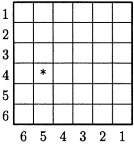
图3.8
横着写的数字表示第一次的结果，竖着写的数字表示第二次的结果．比如第一次向上一面的数字是5，第二次是4，则这一事件对应于图中用星号标出的方格．第一次向上一面出现5的概率是1/6．但这一事件现在不再是基本事件了：它包含了数字5上方的方格所对应的6个基本事件．这些数字 i ( 1 ≤ i ≤ 6 ) i(1\leq i\leq6)
样的．因为包含这6个基本事件的事件其概率为1/6，所以这6个基本事件的概率都是1/36．根据同样的推理，我们可以知道所有基本事件的概率都是1/36．
考虑事件 N k N_k k k k k ( a , b ) (a,b) a + b a+b
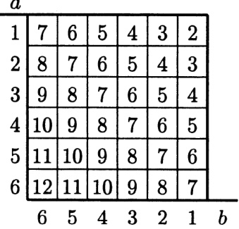
图3.9
可以看到，数字 12 只出现在一个方格中，因此 n ( N 12 ) = 1 n(N_{12}) = 1 n ( N 11 ) = 2 n(N_{11}) = 2 n ( N 10 ) = 3 n(N_{10}) = 3 n ( N 9 ) = 4 n(N_{9}) = 4 n ( N 8 ) = 5 n(N_{8}) = 5 n ( N 7 ) = 6 n(N_{7}) = 6 n ( N 6 ) = 5 n(N_{6}) = 5 n ( N 5 ) = 4 n(N_{5}) = 4 n ( N 4 ) = 3 n(N_{4}) = 3 n ( N 3 ) = 2 n(N_{3}) = 2 n ( N 2 ) = 1 n(N_{2}) = 1 n ( N k ) n(N_{k}) n ( N 7 ) n(N_{7}) p ( N k ) = n ( N k ) / 36 p(N_{k}) = n(N_{k})/36 p ( N 7 ) p(N_{7}) p ( N k ) p(N_{k})
如果投掷 n 次会有什么样的结果呢？此时基本事件由 n 个数 ( a 1 , ⋯ , a n ) (a_{1},\cdots,a_{n}) 1 / 6 n 1/6^{n} a 1 + ⋯ + a n = k a_{1}+\cdots+a_{n}=k
k = a 1 + ⋯ + a n , 1 ≤ a i ≤ 6 . k=a_{1}+\cdots+a_{n},\qquad1\leq a_{i}\leq6.
为此我们来考虑多项式 F ( x ) = ( x + x 2 + ⋯ + x 6 ) n F(x) = (x + x^2 + \cdots + x^6)^n x β i x^{\beta_i} x β 1 + ⋯ + β n x^{\beta_1 + \cdots + \beta_n} F ( x ) F(x) x k x^k G ( x ) = ( 1 + x + ⋯ + x 5 ) n G(x) = (1 + x + \cdots + x^5)^n F ( x ) = x n G ( x ) F(x) = x^n G(x) F ( x ) F(x) x k x^k G ( x ) G(x) x k − n x^{k-n} G ( x ) G(x)
上述问题的答案可以通过多项式 G ( x ) G(x)
对于任意的多项式 f ( x ) = c 0 + c 1 x + ⋯ + c n x n f(x) = c_0 + c_1x + \cdots + c_nx^n c k = c n − k c_k = c_{n-k} ( i , c i ) (i, c_i) x = n / 2 x = n/2 n n n n
多项式 x n f ( 1 / x ) x^n f(1/x) f ( x ) f(x) f ( x ) = a 0 + a 1 x + ⋯ + a n x n f(x) = a_0 + a_1 x + \cdots + a_n x^n f ( 1 / x ) = a 0 + a 1 / x + ⋯ + a n / x n f(1/x) = a_0 + a_1/x + \cdots + a_n/x^n x n f ( 1 / x ) = a 0 x n + a 1 x n − 1 + ⋯ + a n x n x^n f(1/x) = a_0 x^n + a_1 x^{n-1} + \cdots + a_n x^{n}
图3.10
⋯ + a n \cdots + a_n f ( x ) f(x) x n f ( 1 / x ) = f ( x ) x^n f(1/x) = f(x) f ( x ) f(x) g ( x ) g(x) n n m m x n f ( 1 / x ) = f ( x ) x^n f(1/x) = f(x) x m g ( 1 / x ) = g ( x ) x^m g(1/x) = g(x) x n f ( 1 / x ) x m g ( 1 / x ) = f ( x ) g ( x ) x^n f(1/x) x^m g(1/x) = f(x) g(x) x n + m f ( 1 / x ) g ( 1 / x ) = f ( x ) g ( x ) x^{n+m} f(1/x) g(1/x) = f(x) g(x) f ( x ) g ( x ) f(x) g(x) 1 + x + ⋯ + x 5 1 + x + \cdots + x^5 G ( x ) = ( 1 + x + ⋯ + x 5 ) n G(x) = (1 + x + \cdots + x^5)^n
对于多项式 f ( x ) = c 0 + c 1 x + ⋯ + c n x n f(x) = c_0 + c_1x + \cdots + c_nx^n n n m m c 0 ≤ c 1 ≤ ⋯ ≤ c m ≥ c m + 1 ≥ ⋯ ≥ c n c_0 \leq c_1 \leq \cdots \leq c_m \geq c_{m+1} \geq \cdots \geq c_n f ( x ) f(x) c i c_i ( i , c i ) (i, c_i)
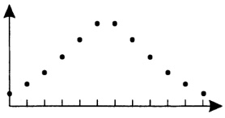
图3.11
多项式 ( 1 + x ) n (1+x)^n C n m = C n n − m C_n^m = C_n^{n-m}
可以证明，如果多项式 f ( x ) f(x) g ( x ) g(x) f ( x ) g ( x ) f(x)g(x) G ( x ) G(x) G ( x ) G(x) c k x k c_k x^k c k = c n − k c_k = c_{n-k} c n − m x n − m c_{n-m} x^{n-m} k ≤ n / 2 k \leq n/2 n − k ≥ n / 2 n-k \geq n/2 k ≤ i ≤ n − k k \leq i \leq n-k i i c i x i c_i x^i n n c n / 2 c_{n/2} n n c ( n − 1 ) / 2 c_{(n-1)/2} c ( n + 1 ) / 2 c_{(n+1)/2} G ( x ) G(x) n n x 5 n / 2 x^{5n/2} n n x ( 5 n − 1 ) / 2 x^{(5n-1)/2} x ( 5 n + 1 ) / 2 x^{(5n+1)/2}
系数.
对于多项式 F ( x ) F(x) x n x^{n} 5 n / 2 + n = 7 n / 2 5n/2 + n = 7n/2 ( 5 n − 1 ) / 2 + n = ( 7 n − 1 ) / 2 (5n - 1)/2 + n = (7n - 1)/2 ( 5 n + 1 ) / 2 + n = ( 7 n + 1 ) / 2 (5n + 1)/2 + n = (7n + 1)/2 ( 7 n − 1 ) / 2 (7n - 1)/2 ( 7 n + 1 ) / 2 (7n + 1)/2
再考虑一个类似的问题．假设有 n n m m S S a a n ( S ) = n n(S) = n 1 , 2 , ⋯ , m 1,2,\cdots,m ( a 1 , ⋯ , a m ) (a_1,\cdots,a_m) a i ∈ S a_i \in S i i a i a_i 7 7 S m S^m n ( S m ) = n m n(S^m) = n^m 1 / n m 1/n^m N ⊂ S m N \subset S^m S S ( a 1 , ⋯ , a m ) (a_1,\cdots,a_m) S = { a , b , c } S = \{a,b,c\} m = 4 m = 4 ( a , b , c , a ) ∈ N (a,b,c,a) \in N ( a , b , a , b ) (a,b,a,b) N N c c n ( N ) n(N)
将 S m S^m a i a_i a a ( a 1 , ⋯ , a m ) (a_1, \cdots, a_m) N a N_a N = U N a ¯ N = \overline{UN_a} a a S S n ( N ) = n ( U N a ¯ ) n(N) = n(\overline{UN_a}) n ( U N a ¯ ) n(\overline{UN_a}) n ( N a ∩ N a 2 ∩ ⋯ ∩ N a r ) n(N_a \cap N_{a_2} \cap \cdots \cap N_{ar}) a i ∈ S a_i \in S ( c 1 , ⋯ , c m ) (c_1, \cdots, c_m) c i c_i a 1 , ⋯ , a r a_1, \cdots, a_r c i c_i { a 1 ¯ , ⋯ , a r ¯ } \{\overline{a_1}, \cdots, \overline{a_r}\} ( { a 1 ¯ , ⋯ , a r ¯ } ) m (\{\overline{a_1}, \cdots, \overline{a_r}\})^m ( n ( { a 1 ¯ , ⋯ , a r ¯ } ) ) m (n(\{\overline{a_1}, \cdots, \overline{a_r}\}))^m
n ( { a 1 , ⋯ , a r } ) = r , n ( S ) = n , n(\left\{a_{1},\cdots,a_{r}\right\})=r,\qquad n(S)=n,
所以
n ( { a 1 , ⋯ , a r } ¯ ) = n − r , n\big(\overline{\{a_{1},\cdots,a_{r}\}}\big)=n-r,
以及
n ( N a 1 ∩ N a 2 ∩ ⋯ ∩ N a r ) = ( n − r ) m . n\bigl(N_{a_{1}}\cap N_{a_{2}}\cap\cdots\cap N_{a_{r}}\bigr)=(n-r)^{m}.
由此可知，对于我们这个问题，(3.21)中的每一项 n ( S i 1 ∩ S i 2 ∩ ⋯ ∩ S i r ) n(S_{i_1} \cap S_{i_2} \cap \cdots \cap S_{i_r}) ( n − r ) m (n - r)^m r r C n r C_n^r
n ( N ) = n m − C n 1 ( n − 1 ) m + ⋯ + ( − 1 ) n − 1 C n n − 1 ⋅ 1 m . n(N)=n^{m}-C_{n}^{1}(n-1)^{m}+\cdots+(-1)^{n-1}C_{n}^{n-1}\cdot1^{m}.
所求的概率为
n ( N ) n m = 1 − C n 1 ( n − 1 n ) m + ⋯ + ( − 1 ) n − 1 C n n − 1 ( 1 n ) m . \frac{n(N)}{n^{m}}=1-C_{n}^{1}\Big(\frac{n-1}{n}\Big)^{m}+\cdots+(-1)^{n-1}C_{n}^{n-1}\Big(\frac{1}{n}\Big)^{m}.
在前面讨论过的每个例子中，所有基本事件都是等概率的．如果有 n 个基本事件，那么每个基本事件的概率就是 1 n \frac{1}{n}
设 ( M ; p ) (M;p) ( N ; q ) (N;q) ( M ; p ) (M;p) ( N ; q ) (N;q) n ( M ) = m , M = { a 1 , ⋯ , a m } n(M)=m, M=\{a_1,\cdots,a_m\} p ( a i ) = p i p(a_i)=p_i n ( N ) = n , N = { b 1 , ⋯ , b n } n(N)=n, N=\{b_1,\cdots,b_n\} q ( b i ) = q i q(b_i)=q_i a ∈ M a\in M b ∈ N b\in N ( a , b ) ∈ X = M × N (a,b)\in X=M\times N ( a , b ) (a,b) p ( ( a , b ) ) p((a,b))
与之前一样，我们将集合中的元素以表格的形式给出（见图 3.12）.
第一次试验给出事件 a i a_i p i p_i n n ( a i , b 1 ) , ⋯ , ( a i , b n ) (a_i, b_1), \cdots, (a_i, b_n) i i ( N ; q ) (N; q) b 1 , ⋯ , b n b_1, \cdots, b_n ( a i , b 1 ) , ⋯ , ( a i , b n ) (a_i, b_1), \cdots, (a_i, b_n) p i p_i b 1 , ⋯ , b n b_1, \cdots, b_n i i ( N ; q ) (N; q) p i p_i p ( ( a i , b j ) ) / p i p((a_i, b_j)) / p_i ( N ; q ) (N; q) p ( ( a i , b j ) ) / p i = q j p((a_i, b_j)) / p_i = q_j p ( ( a i , b j ) ) = p i q j p((a_i, b_j)) = p_i q_j
p ( ( a i , b j ) ) = p i q j . p((a_{i},b_{j}))=p_{i}q_{j}.
这样我们就得到了一个新的概率概型：图3.12中第i列上所有基本事件的概率之和为
p i q 1 + ⋯ + p i q n = p i ( q 1 + ⋯ + q n ) = p i , p_{i}q_{1}+\cdots+p_{i}q_{n}=p_{i}(q_{1}+\cdots+q_{n})=p_{i},
所有基本事件概率之和为
p 1 + ⋯ + p m = 1 . p_{1}+\cdots+p_{m}=1.
这样（3.29）式的条件就得到了满足.
这个新的概率概型 ( X ; p ) (X;p) ( M ; p ) (M;p) ( N ; q ) (N;q) ( M ; p ) (M;p) ( N ; q ) (N;q) X = M × N X = M \times N p ( ( a , b ) ) = p ( a ) q ( b ) p((a,b)) = p(a)q(b)
上述推理解释了为何如此定义概率．如果要给出形式定义的话，只写出 ( 3.32 ) (3.32)
通过归纳我们可以定义多个概率概型 ( M 1 ; p 1 ) , ⋯ , ( M r ; p r ) (M_1; p_1), \cdots, (M_r; p_r)
M 1 × ⋯ × M r = ( M 1 × ⋯ × M r − 1 ) × M r , M_{1}\times\cdots\times M_{r}=\left(M_{1}\times\cdots\times M_{r-1}\right)\times M_{r},
其中 M 1 × ⋯ × M r − 1 M_1 \times \cdots \times M_{r-1} ( M 1 × ⋯ × M r − 1 ) (M_1 \times \cdots \times M_{r-1}) M r M_r M 1 × ⋯ × M r M_1 \times \cdots \times M_r ( a 1 , ⋯ , a r ) (a_1, \cdots, a_r) a i ∈ M i a_i \in M_i ( a 1 , ⋯ , a r ) (a_1, \cdots, a_r)
p ( ( a 1 , ⋯ , a r ) ) = p 1 ( a 1 ) p 2 ( a 2 ) ⋯ p r ( a r ) . p((a_{1},\cdots,a_{r}))=p_{1}(a_{1})p_{2}(a_{2})\cdots p_{r}(a_{r}).
可以通过对 r 进行归纳来验证这个等式．依据 (3.33) 和 (3.32)，有
p ( ( a 1 , ⋯ , a r ) ) = p ( ( ( a 1 , ⋯ , a r − 1 ) , a r ) ) = p ( ( a 1 , ⋯ , a r − 1 ) ) p r ( a r ) , p((a_{1},\cdots,a_{r}))=p(((a_{1},\cdots,a_{r-1}),a_{r}))=p((a_{1},\cdots,a_{r-1}))p_{r}(a_{r}),
再结合归纳假设
p ( ( a 1 , ⋯ , a r − 1 ) ) = p 1 ( a 1 ) p 2 ( a 2 ) ⋯ p r − 1 ( a r − 1 ) p((a_{1},\cdots,a_{r-1}))=p_{1}(a_{1})p_{2}(a_{2})\cdots p_{r-1}(a_{r-1})
即可得到 (3.34) 式．这个公式可以这么表述：将 ( a 1 , ⋯ , a r ) (a_{1},\cdots,a_{r})
我们来将这一构造应用于一个特殊的概率概型 I n I^n I = { a , b } I = \{a, b\} p ( a ) = p p(a) = p p ( b ) = q p(b) = q p ≥ 0 p \geq 0 q ≥ 0 q \geq 0 p + q = 1 p + q = 1 I n I^n n n a bbb a b a\text{bbb}ab a a k k b b n − k n - k p k q n − k p^k q^{n - k} n n a a b b a a p p b b q q
比如 n = 3 时，我们有 8 个基本事件： ( a , a , a ) (a, a, a) ( a , a , b ) (a, a, b) ( a , b , a ) (a, b, a) ( b , a , a ) (b, a, a) ( a , b , b ) (a, b, b) ( b , a , b ) (b, a, b) ( b , b , a ) (b, b, a) ( b , b , b ) (b, b, b) p 3 p^{3} p 2 q p^{2}q p 2 q p^{2}q p 2 q p^{2}q p q 2 pq^{2} p q 2 pq^{2} p q 2 pq^{2} q 3 q^{3}
n − k n-k b b p k q n − k p^{k}q^{n-k} p p
我们记 A k A_k n n a a k k a a k k n − k n - k b b p k q n − k p^k q^{n-k} A k A_k n n 1 , ⋯ , n 1, \cdots, n k k n n k k C n k C_n^k A k A_k
p ( A k ) = C n k p k q n − k = n ! k ! ( n − k ) ! p k q n − k . p(A_{k})=C_{n}^{k}p^{k}q^{n-k}=\frac{n!}{k!(n-k)!}p^{k}q^{n-k}.
由此我们来求出事件 a 最可能出现的次数，也就是找出哪个 k 可以使得 (3.35) 式中的数取到最大值．我们将这些数按顺序写出来：
1 q n , n p q n − 1 , n ( n − 1 ) 2 p 2 q n − 2 , ⋯ , 1 p n . 1q^{n},\quad n p q^{n-1},\quad\frac{n(n-1)}{2}p^{2}q^{n-2},\quad\cdots\quad,1p^{n}.
考虑相邻两个数的比值
p ( A k + 1 ) p ( A k ) = n ! ( k + 1 ) ! ( n − k − 1 ) ! p k + 1 q n − k − 1 n ! k ! ( n − k ) ! p k q n − k = ( n − k ) p ( k + 1 ) q . \frac{p(A_{k+1})}{p(A_{k})}=\frac{\frac{n!}{(k+1)!(n-k-1)!}p^{k+1}q^{n-k-1}}{\frac{n!}{k!(n-k)!}p^{k} q^{n-k}}=\frac{(n-k)p}{(k+1)q}.
（其中省略的化简过程你应该很容易补充出来.）
如果这个数大于 1，那么第 k + 1 k+1 k + 1 k+1 ( n − k ) p / ( ( k + 1 ) q ) > 1 (n-k)p/((k+1)q)>1 ( n − k ) p > ( k + 1 ) q (n-k)p>(k+1)q p + q = 1 p+q=1 n p > k + 1 − p np>k+1-p ( n + 1 ) p − 1 > k (n+1)p-1>k k > ( n + 1 ) p − 1 k>(n+1)p-1 p ( A k + 1 ) / p ( A k ) p(A_{k+1})/p(A_k) k = ( n + 1 ) p − 1 k=(n+1)p-1 p ( A k + 1 ) = p ( A k ) p(A_{k+1})=p(A_k) ( n + 1 ) p − 1 (n+1)p-1 k + 1 k+1
第一种情况：数字 ( n + 1 ) p − 1 (n+1)p-1 ( n + 1 ) p (n+1)p p ( A m ) p(A_{m}) m ≠ ( n + 1 ) p − 1 m \neq (n+1)p-1 p ( A k ) p(A_{k}) ( n + 1 ) p (n+1)p
第二种情况：数字 ( n + 1 ) p − 1 (n+1)p-1 p ( A k ) p(A_{k}) p ( A m + 1 ) = p ( A m ) p(A_{m+1})=p(A_{m}) p ( A k ) p(A_{k})
因此数字 p ( A k ) p(A_{k})
q n + n p q n − 1 t + n ( n − 1 ) 2 p 2 q n − 2 t 2 + ⋯ + p n t n q^{n}+npq^{n-1}t+\frac{n(n-1)}{2}p^{2}q^{n-2}t^{2}+\cdots+p^{n}t^{n}
是单峰多项式．借助二项式公式可以将其写作 ( q + p t ) n (q+pt)^{n}
对于 p = q = 1/2 这种最简单的情形，如果 ( n + 1 ) / 2 − 1 (n+1)/2 - 1 ( n + 1 ) / 2 − 1 = n / 2 − 1 / 2 (n+1)/2 - 1 = n/2 - 1/2 m = ( n + 1 ) / 2 − 1 = ( n − 1 ) / 2 m = (n+1)/2 - 1 = (n-1)/2 ( n − 1 ) / 2 (n-1)/2 ( n + 1 ) / 2 (n+1)/2 ( n + 1 ) / 2 (n+1)/2 ( n − 1 ) / 2 (n-1)/2
通过对某地多年的观测，发现7月4日下雨的概率为4/17。试算出之后50年中7月4日下雨最可能发生的次数。
这里 n=50, p=4/17, 所以 m = ( n + 1 ) p − 1 m=(n+1)p-1
概率值 C n k p k ( 1 − p ) n − k ( k = 0 , 1 , ⋯ , n ) C_n^k p^k (1 - p)^{n - k} (k = 0,1,\cdots,n) p = 1 / 3 p = 1/3 n = 4 , 9 , 16 , 36 , 100 n = 4,9,16,36,100
图3.13
可以看到，当 n 变大时，整个分布并不随意，而是逐渐接近某条光滑曲线．为了看出这
一点，我们需要调整图象：将最大数值 m 移到 y 轴上，缩短 x 轴上相邻刻度之间的距离（从图 3.13 中可以看出这一点），最后按适当比例减小所有数值，以便最大数值 m 都处于差不多的高度．完成这一切之后，就可以看出当 n 不断增大时，图中的点逐渐接近一条特定的曲线——函数
y = 1 2 π c x 2 y=\frac{1}{\sqrt{2\pi}}c^{x^{2}}
的图象，其中 π \pi 1 / e 1/\sqrt{e}
这一命题被称为拉普拉斯定理，它刻画了二项式系数的更精细的性质．要严格证明的话，就需要说明“越来越接近”到底是什么意思，这就涉及到了极限的概念，对此我们不打算进一步展开.
习题：
对于任一概率概型 ( M ; p ) (M;p) k k M 1 ⊂ M , ⋯ , M k ⊂ M M_1 \subset M, \cdots, M_k \subset M M i 1 ∩ ⋯ ∩ M i r M_{i_1} \cap \cdots \cap M_{i_r} p ( M i 1 ∩ ⋯ ∩ M i r ) p(M_{i_1} \cap \cdots \cap M_{i_r}) M 1 ∪ ⋯ ∪ M k M_1 \cup \cdots \cup M_k p ( M 1 ∪ ⋯ ∪ M k ) p(M_1 \cup \cdots \cup M_k)
证明：如果多项式 f ( x ) f(x) f ( x ) ( 1 + x ) f(x)(1+x)
证明：如果多项式 f ( x ) f(x) f ( x ) ( 1 + x + x 2 + x 3 + x 4 + x 5 ) f(x)(1+x+x^{2}+x^{3}+x^{4}+x^{5}) ( 1 + x + x 2 + x 3 + x 4 + x 5 ) n (1+x+x^{2}+x^{3}+x^{4}+x^{5})^{n}
对于 m 个粒子和 n 台仪器的问题，确保自己能明白当 n = m 时，结果是 n ! / n n n! / n^n
罐子里有 n 个形状相同的球，其中 m 个是红球，n-m 个是黑球。从中随机取 r 个球。请问取出 k 个红球和 r-k 个黑球的概率是多少？（提示：“随机”的意思是从 n 球中任取 r 球的所有不同结果都具有相同的概率。）
证明：如果伯努利概型中的概率 p 是无理数，那么事件 a 最可能出现的次数是唯一的.
在伯努利概型中，事件 a 最可能出现的次数与 n 的比值被称为最可能的比例．当 n 不断增大时，最可能的比例会越来越接近事件 a 发生的概率 p．
11 素数的个数是无限的
在第一章中我们知道，每个自然数都有唯一的素分解．从乘法运算的角度来看，素数就是最简单的对象，由它们出发我们可以得到所有自然数．这和由数字1通过加法得到所有自然数类似．从这个角度来看，我们希望得到所有素数就很合理了．前10个自然数中有4个素数：2，3，5，7．我们还可以找到更多的素数：对于后面的每个自然数，我们用所有已知的素数去除，以判断它是否为素数．前100个自然数中有25个素数：
2, 3, 5, 7, 11, 13, 17, 19, 23, 29, 31, 37, 41,
43, 47, 53, 59, 61, 67, 71, 73, 79, 83, 89, 97.
这个素数序列后面还有多少数呢？
这个问题老早之前就已经出现了，我们可以在欧几里得的《几何原本》中找到答案。我们将这个答案总结为下述定理：
Proof. 这个定理我们多给几个证明．第一个证明取自《几何原本》．假定我们已经找到了 n 个素数： p 1 p_1 p 2 p_2 ⋯ \cdots p n p_n N = p 1 p 2 ⋯ p n + 1 N = p_1 p_2 \cdots p_n + 1 p 1 p_1 p 2 p_2 ⋯ \cdots p n p_n p i p_i N − p 1 p 2 ⋯ p n N - p_1 p_2 \cdots p_n p i p_i N − p 1 p 2 ⋯ p n = 1 N - p_1 p_2 \cdots p_n = 1 p i p_i
第二个证明. 第9节（见(3.25)式）已经证明，不超过N且与N互素的自然数的个数为
N ( 1 − 1 p 1 ) ( 1 − 1 p 2 ) ⋯ ( 1 − 1 p n ) , N\Big(1-\frac{1}{p_{1}}\Big)\Big(1-\frac{1}{p_{2}}\Big)\cdots\Big(1-\frac{1}{p_{n}}\Big),
这里 p 1 , p 2 , ⋯ , p n p_{1}, p_{2}, \cdots, p_{n}
假定我们已经找到了 n n p 1 , p 2 , ⋯ , p n p_1, p_2, \cdots, p_n N = p 1 p 2 ⋯ p n N = p_1 p_2 \cdots p_n p i ( 1 − 1 / p i ) p_i (1 - 1/p_i) p i − 1 p_i - 1
( p 1 − 1 ) ( p 2 − 1 ) ⋯ ( p n − 1 ) . (p_{1}-1)(p_{2}-1)\cdots(p_{n}-1).
因为存在素数大于 2（比如 3），所以上式是一个大于 1 的数．即存在一个大于 1、小于 N 的数 a，它与 N 互素．因此 a 至少有一个素因数不与诸 p i p_i
素数的无穷序列在整个自然数中分布的非常稀疏．比如相邻两个素数间的“间隙”可以任意大．也就是说，我们可以找到任意多个连续自然数，其中一个素数都没有．下列 n 个数
( n + 1 ) ! + 2 , ( n + 1 ) ! + 3 , ⋯ , ( n + 1 ) ! + n + 1 (n+1)!+2,\ (n+1)!+3,\ \cdots,\ (n+1)!+n+1
都不是素数：第一个数能被 2 整除，第二个数能被 3 整除，最后一个数能被 n + 1 n+1 x 2 + x + 41 x^2 + x + 41 x x x = 40 x = 40 41 2 41^2 f ( x ) f(x) x = 0 , 1 , 2 , ⋯ x = 0, 1, 2, \cdots a x 2 + b x + c ax^2 + bx + c a , b , c a, b, c
假设当 x = 0 时多项式的值 c 是素数．那么对任一正整数 k，我们取 x = kc．此时多项式的值 a k 2 c 2 + b k c + c ak^{2}c^{2} + bkc + c a k 2 c 2 + b k c + c ak^{2}c^{2} + bkc + c
更进一步，对任意次数的整系数多项式 f ( x ) f(x) f ( x ) = a 0 + a 1 x + ⋯ + a n x n f(x) = a_0 + a_1x + \cdots + a_nx^n f ( y + m ) = g ( y ) f(y + m) = g(y)
g ( y ) = b 0 + b 1 y + ⋯ + b n y n . g(y)=b_{0}+b_{1}y+\cdots+b_{n}y^{n}.
易知 g ( y ) g(y) b i b_i y ≥ 0 y \geq 0 g ( 0 ) = b 0 = p g(0) = b_0 = p k k g ( k p ) = p + b 1 k p + ⋯ + b n ( k p ) n g(kp) = p + b_1 k p + \cdots + b_n (kp)^n p p p + b 1 k p + ⋯ + b n ( k p ) n = p p + b_1 k p + \cdots + b_n (kp)^n = p
b 1 + b 2 k p + ⋯ + b n ( k p ) n − 1 = 0 b_{1}+b_{2}k p+\cdots+b_{n}(k p)^{n-1}=0
时， g ( k p ) g(kp) g ( k p ) g(kp)
可以证明，对任意正整数 k，不存在整系数的 k 元多项式在所有自然数处的取值都是素数．然而存在一个 26 元 25 次多项式，它有下述性质：将这个多项式在各未知数取非负整数时得到的那部分正值组成一个集合，则这个集合就是全体素数构成的集合．因为拉丁字母正好有26个，所以未知数就用字母a，b， c , ⋯ , x , y , z c, \cdots, x, y, z
F ( a , b , c , d , e , f , g , h , i , j , k , l , m , n , o , p , q , r , s , t , u , v , w , x , y , z ) = ( k + 2 ) { 1 − [ w z + h + j − q ] 2 − [ ( g k + 2 g + k + 1 ) ( h + j ) + h − z ] 2 − [ 2 n + p + q + z − e ] 2 − [ 16 ( k + 1 ) 2 ( k + 2 ) ( n + 1 ) 2 + 1 − f 2 ] 2 − [ e 3 ( e + 2 ) ( a + 1 ) 2 + 1 − o 2 ] 2 − [ ( a 2 − 1 ) y 2 + 1 − x 2 ] 2 − [ 16 r 2 y 4 ( a 2 − 1 ) + 1 − u 2 ] 2 − [ n + l + v − y ] 2 − [ ( ( a + u 2 ( u 2 − a ) ) 2 − 1 ) ( n + 4 d y ) 2 + 1 − ( x + c u ) 2 ] 2 − [ ( a 2 − 1 ) l 2 + 1 − m 2 ] 2 − [ a i + k + 1 − l − i ] 2 − [ p + l ( a − n − 1 ) + b ( 2 a n + 2 a − n 2 − 2 n − 2 ) − m ] 2 − [ q + y ( a − p − 1 ) + s ( 2 a p + 2 a − p 2 − 2 p − 2 ) − x ] 2 − [ z + p l ( a − p ) + t ( 2 a p − p 2 − 1 ) − p m ] 2 } . \begin{aligned}&F(a,b,c,d,e,f,g,h,i,j,k,l,m,n,o,p,q,r,s,t,u,v,w,x,y,z)\\=&(k+2)\Big\{1-[wz+h+j-q]^{2}-[{(g k+2g+k+1)(h+j)+h-z}]^{2}\\&-[2n+p+q+z-e]^{2}-\big[16(k+1)^{2}(k+2)(n+1)^{2}+1-f^{2}\big]^{2}\\&-\big[e^{3}(e+2)(a+1)^{2}+1-o^{2}\big]^{2}-\big[(a^{2}-1)y^{2}+1-x^{2}\big]^{2}\\&-\big[16r^{2}y^{4}(a^{2}-1)+1-u^{2}\big]^{2}-[n+l+v-y]^{2}\\&-\big[\big((a+u^{2}(u^{2}-a)\big)^{2}-1\big)(n+4dy)^{2}+1-(x+cu)^{2}\big]^{2}\\&-\big[(a^{2}-1)l^{2}+1-m^{2}\big]^{2}-\big[ai+k+1-l-i\big]^{2}\\&-\big[p+l(a-n-1)+b(2an+2a-n^{2}-2n-2)-m\big]^{2}\\&-\big[q+y(a-p-1)+s(2ap+2a-p^{2}-2p-2)-x\big]^{2}\\&-\big[z+pl(a-p)+t(2ap-p^{2}-1)-pm\big]^{2}\Big\}.\end{aligned}
我们把这个公式写在这边只是想让读者印象深刻．未知数的个数太多了．可以证明这个公式也能得到负值 -m，这里 m 不是素数．因此它并不能给出素数序列的表示．
长久以来的种种努力让多数数学家相信，一个可以描述素数序列的比较简单的公式并不存在。描述素数的“显式公式”是存在的，但其中涉及到一些我们知之甚少（比对于素数的知识还少）的数学对象。因此数学家将研究的焦点集中于素数的“群体”性质，而不再是“个体”性质。下一节我们将对这一点做些阐述。
习题：
证明形如 3 s + 2 3s + 2
证明形如 4 s + 3 4s + 3
证明：当 m ≠ n m \neq n 2 2 n + 1 2^{2^{n}} + 1 2 2 m + 1 2^{2^{m}} + 1 2 2 n 2^{2^{n}} 2 2 m 2^{2^{m}}
设 f ( x ) f(x) f ( 1 ) f(1) f ( 2 ) f(2) ⋯ \cdots
将素数按从小到大的顺序排列，记 p n p_{n} p n + 1 < p n n + 1 p_{n+1} < p_{n}^{n} + 1
记号同习题 5，证明 p n < 2 2 n p_n < 2^{2^n} p n + 1 ≤ 2 2 n + 1 p_{n+1} \leq 2^{2^n} + 1
记号同习题 5，证明 p n + 1 < p 1 p 2 ⋯ p n p_{n+1} < p_1 p_2 \cdots p_n
13 素数的分布
在本节我们再次努力估计素数数列与全体自然数数列有多大差别．为此，我们用一个出自本能的非常朴素的方法来代替上一节中引进的比较“稠密”与“稀疏”的更精细的方法．那种方法来自于欧拉的证明．也就是说，我们试图回答一个直接的问题“素数在自然数中占多大比例”．小于10的自然数中有多少个素数？小于100呢？小于1000呢？对于任意自然数n，记 π ( n ) \pi(n) π ( 1 ) = 0 \pi(1)=0 π ( 2 ) = 1 \pi(2)=1 π ( 4 ) = 2 \pi(4)=2 π ( n ) / n \pi(n)/n
先来看看表格能告诉我们什么。任意关于自然数的论断都可以用不超过某个界限 N 的自然数来检验。在数论研究中，这种工作类似于物理中用实验来检验理论的合理性。特别地，我们可以计算出 π ( n ) \pi(n) n = 10 k n = 10^k k = 1 , 2 , ⋯ , 10 k = 1, 2, \cdots, 10
n n π ( n ) \pi(n) n π ( n ) \dfrac{n}{\pi(n)}
10
4
2.5
100
25
4.0
1 000
168
6.0
10 000
1 229
8.1
100 000
9 592
10.4
1 000 000
78 498
12.7
10 000 000
664 579
15.0
100 000 000
5 761 455
17.4
1 000 000 000
50 847 534
19.7
10 000 000 000
455 059 512
22.0
我们可以看到 n / π ( n ) n/\pi(n) π ( n ) / n \pi(n)/n
当 n 足够大时，比值 π ( n ) / n \pi(n)/n
Proof. 为了证明定理，我们需要对 π ( n ) \pi(n)
现在对我们的问题使用这个方法．假设我们已经找到了 r 个素数 p 1 , p 2 , ⋯ , p r p_{1}, p_{2}, \cdots, p_{r} p i p_{i} p i p_{i} n ( 1 − 1 / p 1 ) ⋯ ( 1 − 1 / p r ) n(1 - 1/p_{1}) \cdots (1 - 1/p_{r}) 2 r 2^{r} p i p_{i}
s ≤ n ( 1 − 1 p 1 ) ⋯ ( 1 − 1 p r ) + 2 r . s\leq n\left(1-\frac{1}{p_{1}}\right)\cdots\left(1-\frac{1}{p_{r}}\right)+2^{r}.
不超过 n n π ( n ) \pi(n) r r p i p_i s s π ( n ) ≤ s + r \pi(n) \leq s + r
π ( n ) ≤ n ( 1 − 1 p 1 ) ⋯ ( 1 − 1 p r ) + 2 r + r . \pi(n)\leq n\Big(1-\frac{1}{p_{1}}\Big)\cdots\Big(1-\frac{1}{p_{r}}\Big)+2^{r}+r.
不等式 (4.8) 引人注目，因为其中的乘积 ( 1 − 1 / p 1 ) ⋯ ( 1 − 1 / p r ) (1 - 1/p_1)\cdots(1 - 1/p_r)
现在来直接证明定理 27. 设任意给定的数为 ϵ \epsilon N N n ≥ N n \geq N π ( n ) / n < ϵ \pi(n)/n < \epsilon r r 2 r 2^r
π ( n ) ≤ n ( 1 − 1 p 1 ) ⋯ ( 1 − 1 p r ) + 2 r + 1 . \pi(n)\leq n\Big(1-\frac{1}{p_{1}}\Big)\cdots\Big(1-\frac{1}{p_{r}}\Big)+2^{r+1}.
不等式 (4.9) 右侧有两项，我们选择这样的 N N n ≥ N n \geq N ϵ n / 2 \epsilon n/2 π ( n ) < ϵ n \pi(n) < \epsilon n π ( n ) / n < ϵ \pi(n)/n < \epsilon r r r r ϵ n / 2 \epsilon n/2 N N ϵ n / 2 \epsilon n/2 r r ( 1 − 1 / p 1 ) ⋯ ( 1 − 1 / p r ) (1 - 1/p_1) \cdots (1 - 1/p_r) ϵ / 2 \epsilon/2 ϵ n / 2 \epsilon n/2 r r N N 2 r + 1 < ϵ N / 2 2^{r+1} < \epsilon N/2 N > 2 r + 2 / ϵ N > 2^{r+2}/\epsilon n ≥ N n \geq N 2 r + 1 < ϵ N / 2 ≤ ϵ n / 2 2^{r+1} < \epsilon N/2 \leq \epsilon n/2
最后再加一点说明．对于等差数列 a m + b am + b b b n n a m ≤ n − b am \leq n - b m m
[(n-b)/a]. 由第9节的内容可知，[(n-b)/a]与(n-b)/a的差不超过1，因而等差数列中不超过n的项的个数不小于(n-b)/a-1，因此它与n的比值不小于
1 n ( n − b a − 1 ) = 1 a − b n a − 1 n . \frac{1}{n}\Big(\frac{n-b}{a}-1\Big)=\frac{1}{a}-\frac{b}{na}-\frac{1}{n}.
当 n 变大时，这个数接近 1/a，因而不可能任意小。如果将定理 27 中的数列换成等差数列，结论将不再成立。这说明素数的分布比任一等差数列都要稀疏。
习题：
记 p n p_n n n C C n n p n > C n p_n > Cn π ( p n ) = n \pi(p_n) = n
考虑那些十进制表示中不含某个特定数码（比如 0）的自然数．将这些数按由小到大的顺序排列为 q 1 q_{1} q 2 q_{2} q n q_{n} π 1 ( n ) \pi_{1}(n) π 1 ( n ) / n \pi_{1}(n)/n
1 q 1 , 1 q 1 + 1 q 2 , ⋯ , 1 q 1 + ⋯ + 1 q n , ⋯ \frac{1}{q_{1}},\quad\frac{1}{q_{1}}+\frac{1}{q_{2}},\quad\cdots,\quad\frac{1}{q_{1}}+\cdots+\frac{1}{q_{n}},\quad\cdots
是有界的．（提示：不要试着复制定理 27 的证明．将和式进行划分，使得分母介于 10 k 10^{k} 10 k + 1 10^{k+1} q i q_{i}